Exercise Sheet
Choose PDF for printing or Word for editing.
Introduction to Statistics · Topic 1
Raw data rarely explain themselves. A spreadsheet may contain questionnaire responses, reaction times, or test scores, but rows of numbers do not yet tell us what is typical, how strongly people differ, or whether an unusual value deserves attention.
Descriptive statistics turn those observations into an understandable first picture. We examine what each variable means, organize its values, describe their center and spread, and look at the distribution’s shape. A distribution is the pattern formed by a variable’s values and by how often they occur. Its center describes a typical location, its spread describes the amount of variation, and its shape shows how the values are arranged across their range.
This careful first look comes before any attempt to generalize or test a claim. The people, objects, or other cases actually observed form the sample. Descriptive statistics help us notice data problems, choose summaries that suit the measurement, and explain honestly what that sample looks like. The formulas support this understanding by giving precise form to questions that already make sense in words.
Guiding question: How can we turn a table of raw observations into a clear picture without claiming more than the data show?
Descriptive statistics are an essential first step in data analysis. They reveal what the data look like before later analyses are run, reduce the risk of misinterpretation, and provide an honest picture of the sample.
By the end of this topic, you should be able to:
Statistical formulas are compressed instructions. Reading them becomes easier when you identify the operation first and the symbols second. A fraction such as \(a/b\) means that the entire numerator \(a\) is divided by the entire denominator \(b\). Parentheses show which terms belong together, so \((x_i-\bar{x})^2\) means subtract the mean from one observation and then square that deviation.
The capital Greek letter sigma, \(\sum\), means “add a sequence of terms.” In
\[\sum_{i=1}^{n} x_i,\]
\(i\) is the changing index, \(i=1\) is its starting value, \(n\) is its final value, and \(x_i\) is the summand, the expression added at each step. For four observations, the instruction expands to \(x_1+x_2+x_3+x_4\).
One simple pattern will be useful later. If the same number is added to every observation, that number is also added once for every observation in the total. For example, adding 2 to the three values 4, 7, and 9 gives
\[(4+2)+(7+2)+(9+2)=(4+7+9)+3\cdot2.\]
There is no need to memorize a general rule at this point. The example shows that a change applied to every value also changes summaries such as the mean in a predictable way. The section on linear transformations returns to this idea after the basic descriptive measures are familiar.
Two expressions that look similar can represent different calculations. The expression \(\sum_{i=1}^{n} x_i^2\) squares each observation and then adds the squares. The expression \((\sum_{i=1}^{n} x_i)^2\) adds the observations first and then squares that one total. For values 2 and 3, the first result is \(2^2+3^2=13\), while the second is \((2+3)^2=25\).
Read a formula from the innermost operation outward: identify each observation, complete the expression in parentheses, apply powers, add across observations, and divide last. This order will help when you encounter means, variances, z-scores, and later inferential formulas.
The social sciences and humanities study people, communities, institutions, texts, and cultural practices. Their questions may concern stress and memory, educational opportunity, political participation, language use, working conditions, migration, or how ideas change over time. In every case, recorded observations vary. That variation is part of the subject matter and deserves a careful description before anyone makes a broader claim.
Descriptive statistics answer questions such as:
These questions help you decide whether the data are plausible, whether the measurement worked as intended, and whether it is responsible to proceed to the next analytical step. Without this inspection, a researcher might report that one group is generally more anxious even though two or three extreme observations created most of the difference. The same issue arises when comparing schools, survey groups, historical periods, regions, or collections of texts.
A careful analysis begins with descriptive statistics. This initial understanding protects against overconfident interpretation later on.
Human variation and differences between social contexts are often meaningful. Descriptive statistics make those patterns visible. They help you describe what entered the dataset and how the observations vary before drawing broader conclusions. A calculation can be technically correct while still giving a poor account of the evidence, which is why careful description matters in every field represented by this course.
Empirical research answers questions with systematically collected observations or measurements. It moves through several connected phases. A research question and its theoretical concepts guide the study design. The design determines whom or what to study and how to measure each characteristic. Data collection produces recorded values, and statistical analysis helps researchers evaluate the resulting evidence. Descriptive statistics begin the analytical phase, but their quality depends on every decision that came before it.
We can organize that journey into six connected phases. Read them as a chain in which each phase shapes the next:
Statistics enters most visibly in the last two phases, but it cannot be separated from the first four. If a variable was poorly defined or the wrong cases were observed, a flawless calculation still answers the wrong question. This is why we pause over the structure and meaning of a dataset before calculating a mean.
Most datasets can be understood through three basic elements:
| Element | Meaning | Example in the fictional teaching study |
|---|---|---|
| Case or observation | The unit represented by one row | One first-year student |
| Variable | A characteristic represented by one column | Exam anxiety or hours of sleep |
| Value | The recorded result for one case on one variable | An anxiety score of 28 |
Read the table from row to column. A case tells you what one row stands for. A variable tells you what one column records. Their meeting point is a value, the particular result for that case on that variable. For example, the row may represent Student 17, the column may represent exam anxiety, and the cell may contain a score of 28. Keeping these three levels separate prevents a common beginner mistake: treating an identification number, which merely names a row, as if it were a measured amount.
Before summarizing a variable, check that the rows represent the intended cases, the columns have clear definitions, category codes have not been confused with quantities, impossible values have been investigated, and missing values, cells for which no value was recorded, are represented consistently. A polished table cannot repair an unclear measurement process.
Statistics begins with measurement, not calculation. Know what each row, column, and value represents before deciding how to summarize it.
Careful description can reveal suspicious values and patterns, but it cannot undo a weak research design. The population is the full group that the research question aims to understand. If the people who could enter a study differ systematically from that intended population, a polished mean or graph still describes only the available sample. Topic 2 develops this problem when it introduces random sampling and biased samples.
An overall average can also conceal differences between groups. More importantly, an observed group difference or relationship does not reveal what caused it. Other differences between the people or situations may provide alternative explanations. Topic 4 returns to that causal limitation when it introduces correlation.
Before interpreting a summary, ask four questions: Who could enter the dataset? Who is missing? Which variables were measured and how? Which alternative explanations remain? Descriptive statistics help you see the evidence you have. They cannot create evidence that the study design did not collect.
A difference between groups or an association between variables can be important, but description alone cannot identify its cause. Causal interpretation requires a design and assumptions that rule out relevant alternatives.
Before you summarize a variable, you must understand what kind of variable it is. This is not a bureaucratic formality. It determines which statistics are meaningful and which would produce numbers that look precise but describe nothing real.
Think of it this way: you cannot treat the color of a room, a student’s class rank, a temperature reading, and a count of siblings as if they were the same kind of information. Each type of data supports different operations, and applying the wrong operation leads to nonsensical results. The average of “red,” “blue,” and “green” is not a color.
Many introductory frameworks distinguish four levels of measurement: nominal, ordinal, interval, and ratio. This learning sequence also presents absolute scales as a stricter subtype for natural counts with a fixed unit. The five-level version makes that additional distinction explicit. Interval, ratio, and absolute scales are collectively referred to here as metric scales because they involve numerical quantities with equal spacing between values.
A measurement level depends on what its values mean and on which recodings preserve that meaning. Such a recoding is called an admissible transformation. A conclusion is supported by the measurement level when it remains meaningful after every admissible recoding.
To make the five levels concrete, we will follow the same twelve learners attending a fictional study workshop. The table contains one variable at each level. Read one row first. Learner 1 preferred worked examples, rated confidence as 3, experienced a room temperature of 18°C, studied for 0 optional minutes, and completed 0 practice questions. Each column describes the same person in a different way, so each column supports different summaries.
| Learner | Preferred learning format | Confidence (1–5) | Room temperature (°C) | Study time (minutes) | Practice questions |
|---|---|---|---|---|---|
| 1 | Worked examples | 3 | 18 | 0 | 0 |
| 2 | Visual explanations | 4 | 19 | 15 | 1 |
| 3 | Guided practice | 2 | 19 | 20 | 1 |
| 4 | Worked examples | 3 | 20 | 25 | 2 |
| 5 | Guided practice | 5 | 20 | 30 | 2 |
| 6 | Visual explanations | 4 | 20 | 35 | 2 |
| 7 | Worked examples | 3 | 21 | 40 | 3 |
| 8 | Worked examples | 2 | 21 | 45 | 3 |
| 9 | Guided practice | 4 | 21 | 50 | 4 |
| 10 | Visual explanations | 1 | 21 | 60 | 4 |
| 11 | Worked examples | 5 | 22 | 75 | 5 |
| 12 | Visual explanations | 3 | 23 | 90 | 7 |
The learner number simply identifies a row and should never be averaged. In the sections below, we isolate one substantive column at a time. For each variable, we will first inspect a table, then decide which numerical summaries are justified, and finally choose graphics that preserve the variable’s meaning.
A nominal variable divides observations into named categories that have no inherent order. Its labels tell us which category a case belongs to. They do not measure how much of something the case has.
Examples:
In the workshop data, the variable preferred learning format is nominal. “Worked examples,” “visual explanations,” and “guided practice” are three choices. Their order in a table can change without changing what any response means.
| Preferred learning format | Learners | Percentage |
|---|---|---|
| Worked examples | 5 | 41.7% |
| Visual explanations | 4 | 33.3% |
| Guided practice | 3 | 25.0% |
Start with three guiding questions. Which responses belong to the same category? How many learners chose each category? What share of all twelve learners does each count represent? The table answers these questions without inventing an order. Five learners chose worked examples, so that category accounts for 41.7% of the small group.
Any one-to-one relabeling is admissible. Individual counseling, group counseling, and online self-help could be coded as 1, 2, and 3 or as 20, 10, and 70, provided that each original category still has its own unique code. Merging two categories under the same code would go beyond relabeling and discard information.
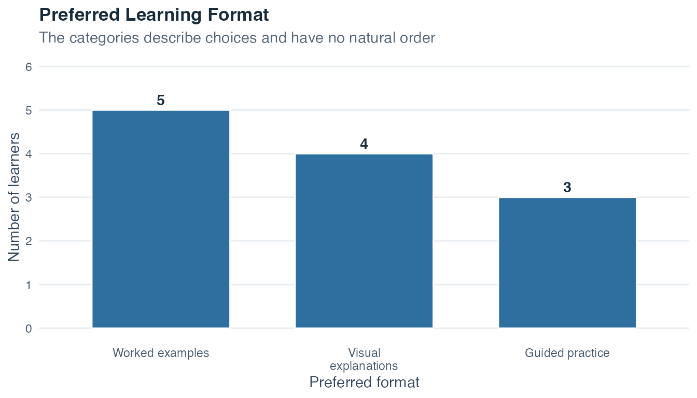
Read the bar chart from its vertical baseline. The worked-examples bar reaches 5, the visual-explanations bar reaches 4, and the guided-practice bar reaches 3. The horizontal positions keep the categories separate without suggesting that one format is inherently higher than another.
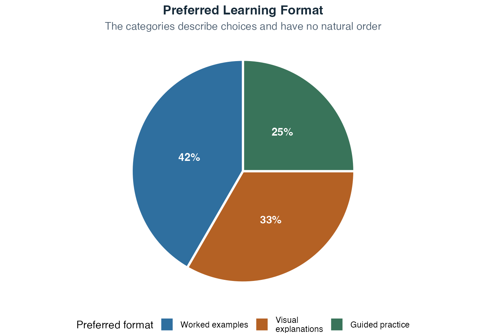
The slices sum to 100%, so the pie chart emphasizes composition. Compare it with the bars. The largest and smallest categories are still clear, while the difference between 4 and 3 is easier to judge from bar length. Both graphics are valid, and the bar chart is usually the more precise comparison tool.
An ordinal variable has categories with a meaningful order, but the spacing between those categories is not guaranteed to be equal.
Examples:
An ordinal scale tells you who has more or less of a property. In the Swiss system, a grade of 6 is better than a grade of 4. In Germany, the direction is reversed and 1 is the highest grade. A severity rating of “severe” represents more distress than “mild.” The distances between adjacent categories remain unknown. Moving by one grade step need not represent the same performance difference at every point on the scale.
Our common example uses the question “How confident do you feel before the workshop?” Responses run from 1, very unsure, to 5, very sure. A rating of 4 expresses more confidence than a rating of 2. The scale does not tell us that the psychological step from 1 to 2 is exactly the same size as the step from 4 to 5.
| Confidence rating | Learners | Percentage | Cumulative percentage |
|---|---|---|---|
| 1 | 1 | 8.3% | 8.3% |
| 2 | 2 | 16.7% | 25.0% |
| 3 | 4 | 33.3% | 58.3% |
| 4 | 3 | 25.0% | 83.3% |
| 5 | 2 | 16.7% | 100.0% |
Read the cumulative column from low to high. It answers questions such as “What percentage selected 3 or lower?” Here the answer is 58.3%. This running total becomes meaningful because the categories have a defensible order.
Any strictly increasing recoding is admissible because it preserves the order. Coding low, medium, and high as 1, 2, and 3 or as 10, 20, and 100 preserves the ranking even though the numerical gaps change. A recoding that reverses or ties categories does not preserve the original ordinal meaning.
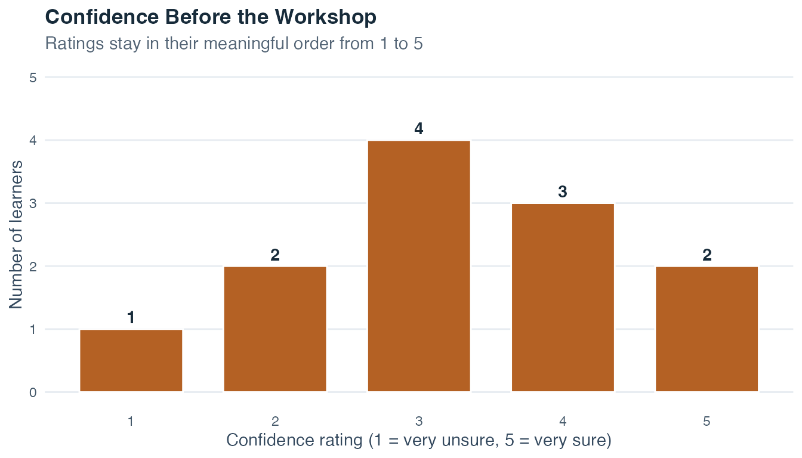
Move from left to right as confidence increases. The bar heights give the category counts, and the peak at rating 3 shows the mode. The ordered positions also make the median category easier to understand. A pie chart would preserve the proportions, although it would make the order and cumulative pattern less visible.
An interval variable has equal spacing between all values, meaning that differences are numerically meaningful. However, it lacks a true zero: the value of zero is assigned by convention rather than representing the complete absence of the property.
The clearest example is temperature measured in Celsius or Fahrenheit. The difference between 10°C and 20°C is exactly the same size as the difference between 20°C and 30°C: the spacing is uniform. But 0°C does not mean “no temperature exists.” It marks the freezing point of water, an assigned reference. Because there is no true zero, ratios make no sense: 40°C is not “twice as warm” as 20°C.
Many multi-item measures in the social sciences, including psychological and educational scores, are analyzed as approximately interval-level. Equal spacing is a working measurement assumption that requires evidence from how the instrument was constructed and validated. Printed numbers alone cannot establish it. A score of 0 may simply mark the lower end of an instrument and need not mean the complete absence of the underlying attribute.
A positive shift-and-rescale rule of the form \(y = a + b x\), with \(b > 0\), is admissible. The fixed number \(a\) shifts the zero point, while the positive multiplier \(b\) changes the unit. The rule preserves equal differences. Converting Celsius to Fahrenheit is the standard example.
The workshop room temperatures provide a small interval-scale example. Each difference of 1°C has the same meaning. The values can be shifted and rescaled into Fahrenheit without changing any temperature difference represented by the data.
| Learner | Room temperature (°C) |
|---|---|
| 1 | 18 |
| 2 | 19 |
| 3 | 19 |
| 4 | 20 |
| 5 | 20 |
| 6 | 20 |
| 7 | 21 |
| 8 | 21 |
| 9 | 21 |
| 10 | 21 |
| 11 | 22 |
| 12 | 23 |
Ask what the equal spacing permits. We can add the temperatures and calculate a mean. We can describe deviations in degrees and compare their size. We can also sort the values and use order-based summaries. The conventional zero point still prevents a meaningful claim that 20°C is twice as warm as 10°C.
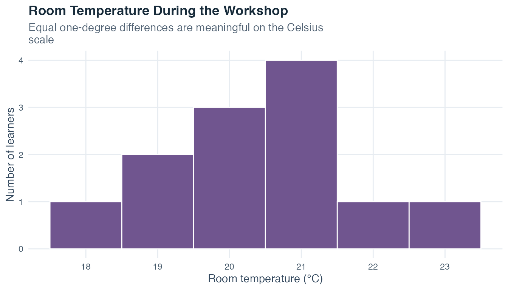
Each bar covers the same one-degree interval. This makes bar height comparable across bins. The concentration around 20°C and 21°C is visible, while the endpoints show that the observed values extend from 18°C to 23°C.
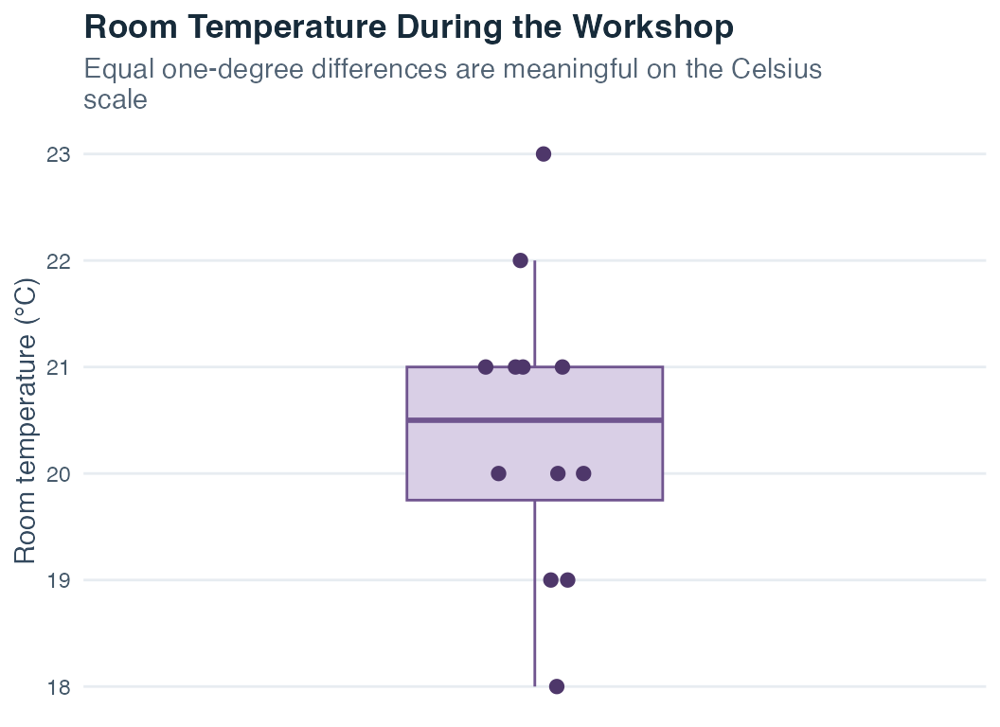
The boxplot offers a faster view of center and spread, while the overlaid points remind us how much detail the summary compresses. Looking at both displays is more informative than asking either one to answer every question.
A ratio variable shares the equal-spacing property of an interval scale and additionally has a true zero point, meaning that zero represents the absence of the measured quantity. This makes ratio statements meaningful.
Examples:
The practical difference from interval scales is that you can now make statements like “Group A’s mean reaction time is 1.5 times that of Group B.” These statements have real meaning on ratio scales.
Positive multiplicative transformations of the form \(y = b x\), with \(b > 0\), are admissible. They change the unit but keep the zero fixed and preserve ratios, as when centimeters are converted to meters.
In the workshop example, optional study time is measured in minutes. A value of 0 means that no study time was recorded, and 60 minutes is twice as much time as 30 minutes. Converting minutes to hours changes the unit while keeping zero and every ratio intact.
| Learner | Study time (minutes) |
|---|---|
| 1 | 0 |
| 2 | 15 |
| 3 | 20 |
| 4 | 25 |
| 5 | 30 |
| 6 | 35 |
| 7 | 40 |
| 8 | 45 |
| 9 | 50 |
| 10 | 60 |
| 11 | 75 |
| 12 | 90 |
Read the endpoints before calculating. The observed minimum of 0 minutes has a direct meaning, and the maximum is 90 minutes. Then compare the middle of the distribution with its longer upper side. This first inspection helps decide whether mean with SD, median with IQR, or both pairs will tell the clearest story.
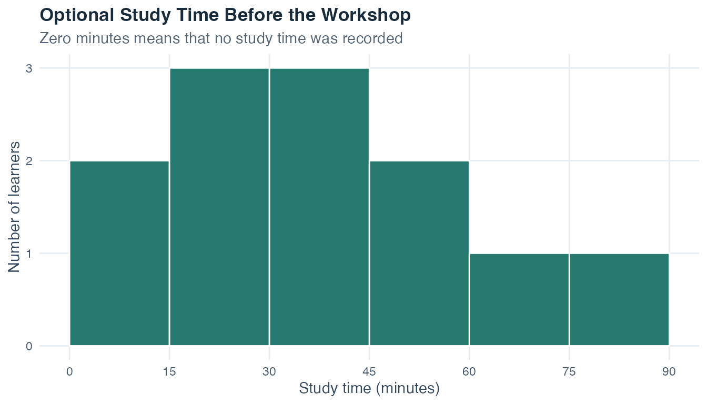
The bars show how the study times occupy the interval from 0 to 90 minutes. Most observations fall below the longest values, so the upper end stretches farther than the main concentration. The table makes the individual values available, while the histogram makes this overall pattern easier to see.
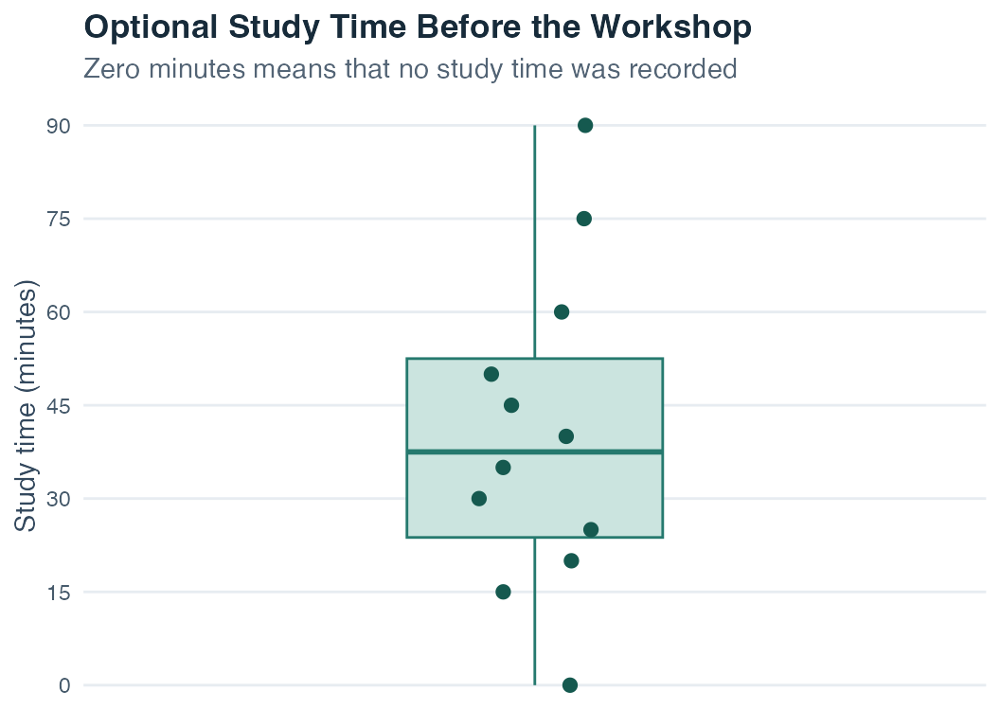
The median line and box summarize the ordered middle of the data. The individual points show where the summary came from, including the learner with 0 recorded minutes and the longer study times near the upper end.
An absolute variable is the most restrictive in terms of admissible transformations. Like ratio variables, absolute variables have a true zero and equal spacing. What makes them distinctive is that they also have a natural, fixed unit that cannot be changed.
Absolute variables are typically whole-number counts of indivisible objects. Such values are called discrete because separate possible values, such as 2 and 3, have no allowable count between them:
You cannot have 1.5 siblings, and “5 siblings” cannot be rescaled into a different unit. The nature of the count defines one unit. Only the identity transformation \(y = x\) is admissible. In practice, absolute variables are described with the same statistics as ratio variables.
The final workshop variable counts how many practice questions each learner completed. Every step of one represents one additional completed question. Zero means none, and the unit cannot be replaced with minutes, kilograms, or another arbitrary measurement unit.
| Questions completed | Learners | Percentage |
|---|---|---|
| 0 | 1 | 8.3% |
| 1 | 2 | 16.7% |
| 2 | 3 | 25.0% |
| 3 | 2 | 16.7% |
| 4 | 2 | 16.7% |
| 5 | 1 | 8.3% |
| 6 | 0 | 0.0% |
| 7 | 1 | 8.3% |
The table keeps the discrete steps visible. Two completed questions is the most common value. Counts of 6 do not appear, and the maximum of 7 belongs to one learner. Those details would disappear if we reported only one average.
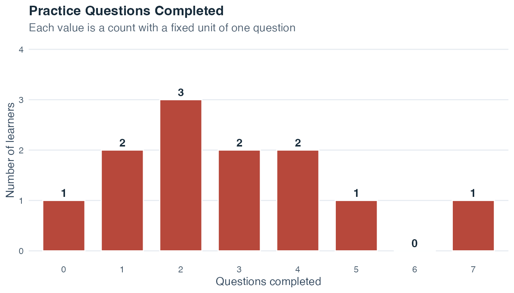
Each horizontal position represents a possible whole-number count. The missing bar at 6 is meaningful because no learner completed exactly six questions. The separate bars preserve the discreteness of the variable.
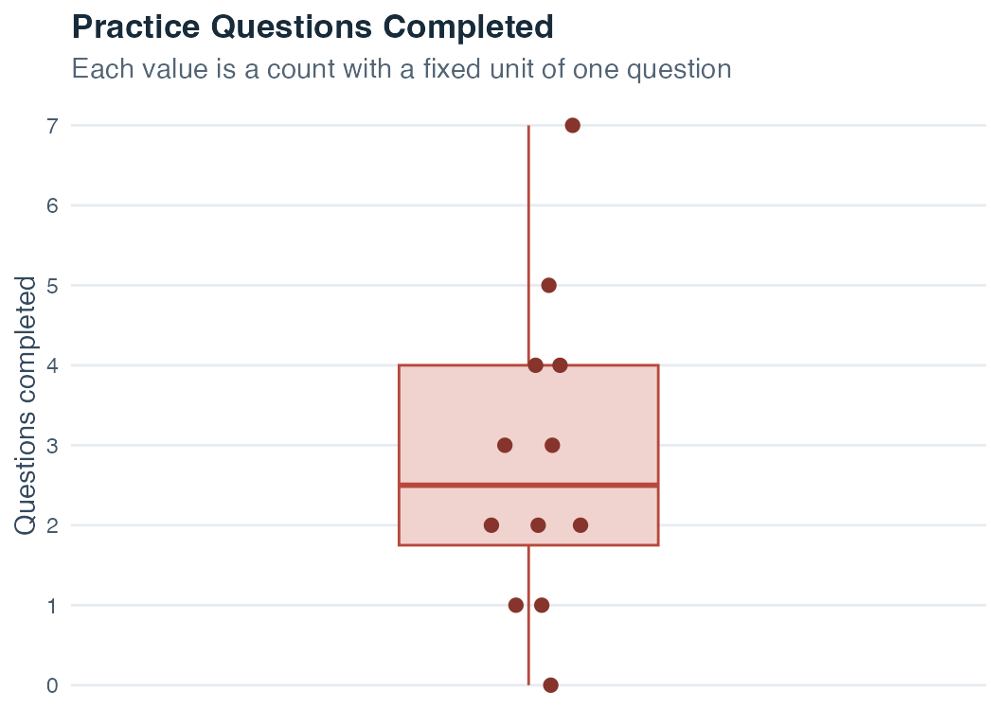
The boxplot makes the center and spread easy to compare with another group, while the points keep the original counts visible. This combination is especially helpful in a small example where every observation can still be shown.
| Scale | Ordered | Equal spacing | True zero | Fixed unit | Example |
|---|---|---|---|---|---|
| Nominal | No | No | No | No | Therapy type |
| Ordinal | Yes | No | No | No | School grade (1–6) |
| Interval | Yes | Yes | No | No | Temperature (°C) |
| Ratio | Yes | Yes | Yes | No | Body weight (kg) |
| Absolute | Yes | Yes | Yes | Yes | Number of siblings |
Each scale level includes all the properties of the levels above it. As you move down the table, more statistical operations become justified. Recognizing the scale level of a variable before computing any summary is one of the most basic habits of good data analysis.
| Scale | Admissible transformation | Property that must be preserved |
|---|---|---|
| Nominal | One-to-one relabeling | Equality and inequality of categories |
| Ordinal | Any strictly increasing recoding | Rank order |
| Interval | \(y = a + b x\), where \(b > 0\) | Equality of differences |
| Ratio | \(y = b x\), where \(b > 0\) | Ratios and the true zero |
| Absolute | \(y = x\) | The fixed zero and natural unit |
The first table is a checklist of measurement properties. The second turns those properties into a practical test: if the allowed recoding changes the meaning of a proposed calculation, that calculation is not justified by the scale alone. For instance, ordinal codes 1, 2, and 3 may legitimately be replaced by 10, 20, and 100 because the order stays the same. Their numerical mean changes dramatically, which shows why an ordinal mean requires an additional equal-spacing assumption.
The three measures of center introduced next enter at different points in this hierarchy:
| Measure of center | Lowest measurement level that supports it | What it uses |
|---|---|---|
| Mode | Nominal | Which value or category occurs most often |
| Median | Ordinal | The order of the observations |
| Mean | Interval | Equal numerical differences between values |
Read this table cumulatively. Metric variables are ordered too, so they can also have medians and modes. An ordinal variable can have a mode as well as a median. Moving down the measurement hierarchy makes additional summaries defensible while retaining the earlier ones.
Every statistical decision begins with scale level. Nominal data support counts, proportions, and the mode. Ordinal data additionally support order-based summaries such as the median and percentiles. Metric data support means, standard deviations, correlations, and more. An operation is meaningful only when it survives every admissible recoding of the measurement scale.
Once the measurement level is known, the next task is to organize the observed values without hiding their pattern. A frequency distribution groups the values into categories or numeric intervals and records how often each one occurs. It is often the first summary created for a variable because it exposes missing categories, impossible codes, sparse groups, and concentrations that a single measure of center would hide.
For category or interval \(j\), let \(n_j\) denote its absolute frequency and let \(n\) denote the total number of observations. The relative frequency is:
\[f_j = \frac{n_j}{n}\]
Relative frequencies can be reported as proportions or multiplied by 100 to obtain percentages. For categories with a meaningful order, the cumulative relative frequency through category \(j\) is:
\[F_j = \sum_{k=1}^{j} f_k\]
| Frequency type | Meaning | Appropriate variables |
|---|---|---|
| Absolute frequency \(n_j\) | Number of observations in category \(j\) | Any measurement level |
| Relative frequency \(f_j\) | Proportion or percentage in category \(j\) | Any measurement level |
| Cumulative relative frequency \(F_j\) | Proportion at or below category \(j\) | Ordinal or metric variables |
Absolute frequencies must sum to \(n\), and relative frequencies must sum to 1, apart from small rounding differences. Cumulative frequencies are not meaningful for nominal categories because a total “through” a category depends on an order the scale does not possess.
The fictional satisfaction ratings provide a small worked example. The count column records how many students selected each ordered category. Dividing each count by 160 produces its relative frequency. Adding the relative frequencies from rating 1 upward produces the cumulative proportion.
| Satisfaction rating | Count | Relative frequency | Cumulative proportion |
|---|---|---|---|
| 1 | 0 | 0.000 | 0.000 |
| 2 | 1 | 0.006 | 0.006 |
| 3 | 27 | 0.169 | 0.175 |
| 4 | 80 | 0.500 | 0.675 |
| 5 | 52 | 0.325 | 1.000 |
Read the final column downward. Its value reaches 0.675 at rating 4, so 67.5% of the students in this fictional dataset selected a rating of 4 or lower. The final row reaches 1.000 because every observation has been included. The value is calculated from the same counts shown in the table, so the written interpretation stays aligned if the teaching data are ever regenerated deliberately.
A frequency table preserves more detail than one average. Check its totals, zero-frequency categories, ordering, and denominators before moving to a graph or a numerical summary.
The frequency distribution shows the full pattern category by category. We can now compress two important features of that pattern: where its center lies and how widely its values vary.
Once you know the scale level, a natural question is: where do these observations generally lie? A list of twelve or twelve thousand values is difficult to hold in mind. A measure of central tendency compresses that list into a reference point that helps us describe a group, compare groups, and recognize observations that lie far from the main concentration.
The word typical needs care. It does not mean that every person has the reported value, and the numerical center may not even be an observed value. It means that we have chosen a defensible way to represent the distribution’s location. The mean, median, and mode define that location differently. The best choice depends on the measurement level, the distribution’s shape, and the substantive question.
Imagine asking where a class usually stands on study time. The mean balances all recorded minutes, the median locates the learner in the middle of the ordered class, and the mode identifies the most common exact duration. These answers can differ without any calculation being wrong. They answer different versions of “What is typical?”
The mean is the arithmetic average. Sum all values in the dataset and divide by the number of observations:
\[\bar{x} = \frac{1}{n} \sum_{i=1}^{n} x_i\]
Here, \(n\) is the sample size, \(x_i\) is the value for the \(i\)-th observation, and the sum runs from \(i = 1\) to \(i = n\).
The deviations from the mean always sum to zero:
\[\sum_{i=1}^{n}(x_i - \bar{x}) = 0\]
Positive deviations above the mean exactly balance negative deviations below it. This identity explains why raw deviations cannot be averaged to measure variability and why squared deviations are used later.
This balancing property gives the mean its main purpose. It provides one reference point that uses every value and supports later calculations based on deviations, including variance, regression, and many inferential methods. When a metric distribution has one roughly symmetric concentration, the mean often gives an efficient description of its location.
A concrete example: five students report body weights of 65, 70, 58, 72, and 80 kilograms. The mean is:
\[\bar{x} = \frac{65 + 70 + 58 + 72 + 80}{5} = \frac{345}{5} = 69 \text{ kg}\]
The mean uses every value in the dataset, which makes it highly informative when the distribution is reasonably symmetric. This same sensitivity to all values is also its vulnerability: a single extreme observation can shift the mean substantially. If the heaviest student weighs 140 kg instead of 80 kg, the mean becomes:
\[\bar{x} = \frac{65 + 70 + 58 + 72 + 140}{5} = \frac{405}{5} = 81 \text{ kg}\]
This new mean of 81 kg may no longer represent the typical student, because it is pulled upward by one atypical observation.
Use the mean when numerical differences are meaningful and the arithmetic center answers the research question. Always inspect the distribution first. An extreme value may be a data error, a rare valid case, or an important part of the population. Investigate those possibilities before deciding how to handle it.
The median is a value that divides the ordered observations so that at least half are at or below it and at least half are at or above it. This wording remains accurate when values are tied.
The median’s purpose is to locate the center by position. Because it depends mainly on order, it remains informative for ordinal data and for metric distributions whose tails or unusual values would pull the mean away from the main group. Questions about a typical income, waiting time, or response time often benefit from this rank-based view.
For an odd number of observations, the median is the single middle value in the ordered list. For an even number of metric observations, software commonly reports the arithmetic mean of the two central values. For a purely ordinal variable, that average may create a number or category the scale does not define. In that case, report the central ordered categories or use a documented convention without pretending that the gap between them is metric.
For the five body weights arranged in order (58, 65, 70, 72, 80), the median is the third value: 70 kg.
Now compare what happens with the outlier: (58, 65, 70, 72, 140). The median is still the third value: 70 kg. In this example, the extreme observation does not change it. This illustrates the key property of the median: it is robust to outliers, meaning that a small number of extreme values usually has limited influence on it.
This robustness matters throughout behavioral and social research. Reaction times in a divided-attention task are often right-skewed. Most participants may respond in 350 to 600 milliseconds, while a few take 1,500 milliseconds or more. In that setting, the median often describes the main group’s typical performance more clearly than the mean, which moves toward the slowest responses.
The mode is the most frequently occurring value or category. Unlike the mean and median, the mode can be computed for any scale level, including nominal variables. If you want to know which therapy approach is most common in a clinic, the mode is the appropriate answer.
The mode’s purpose is practical and direct. It tells us which response, category, or exact value occurs most often. This makes it the only measure of central tendency that works with a purely nominal variable. It is also useful when the most common choice matters in its own right, such as the most requested language for a service or the most frequent number of sessions attended.
But what happens when two values occur equally often and both exceed every other frequency? Consider 1, 2, 2, 3, 3, and 4. The values 2 and 3 each occur twice, so both are modes and the data are bimodal. If more than two values share the highest frequency, the data have several modes and can be described as multimodal. If every value occurs equally often, there is no unique mode to report.
For ungrouped numerical data, the mode refers to exact repeated values. A peak in a histogram is related but depends on the selected bins, so it should not automatically be treated as an exact sample mode. Ask whether you are identifying the most frequent observed value or a broader concentration created by grouping nearby values.
For quantitative data, the mode is most useful when:
A noticeable difference between the mean and median can be a sign of skewness, but the ordering alone does not prove a particular shape. When a histogram also shows a long right tail, a mean above the median is consistent with high values pulling the mean upward while leaving the median more stable. In that setting, the median may better capture what is typical.
The mean, median, and mode each define “typical” differently. The mean is often informative for roughly symmetric metric data. The median and IQR are often more informative when skew or unusual values would pull the mean and standard deviation away from the main concentration. The mode is appropriate for nominal data or when identifying the most common value matters most. More than one summary may be useful, and reporting what you used, and why, is part of being a transparent researcher.
After locating the center, we need to ask how closely the observations gather around it. Variability describes how strongly values differ within a dataset. It tells us whether one central value represents a fairly similar group or compresses a wide range of experiences into a deceptively simple number.
Imagine two classes with the same mean test score of 70. In one class, nearly everyone scores between 68 and 72. In the other, scores range from 35 to 100. The shared mean hides a major difference. The first class is tightly clustered, while the second contains much greater variation. This can change how we understand educational needs, inequality, measurement quality, or the presence of distinct subgroups.
Variability therefore has several purposes. It shows how representative a center is, makes differences between people or cases visible, helps identify unusual or implausible observations, and prepares us for later questions about uncertainty. No single measure captures every aspect of spread. The range uses the two endpoints, the IQR focuses on the middle half, and variance with standard deviation describes deviations around the mean.
The range is the most direct measure of spread:
\[\text{Range} = x_{\max} - x_{\min}\]
It shows how far apart the most extreme observed values are. Its main purpose is a rapid check of the full span. If recorded ages range from 18 to 240 years, the endpoints immediately reveal a value that needs investigation. The range is also easy to communicate when the complete extent matters.
This measure depends entirely on the minimum and maximum. One unusually high or low observation can make the range much wider even when every other value remains unchanged. Use the range as part of a fuller description and avoid asking it to carry the whole interpretation of variability.
To learn where observations sit within the ordered dataset, we use quantiles. A \(p\)-quantile is a threshold that places a specified proportion of ordered observations at or below it. Percentiles express \(p\) on a scale from 0 to 100.
Quantiles serve a different purpose from an average. They locate relative positions. A 90th-percentile reading tells us that the value is at or above most observations in the chosen reference group, even when the distribution is skewed. Quantiles also define useful thresholds for describing the lower, middle, and upper parts of a dataset without requiring equal distances between categories.
Three percentiles are especially important in descriptive statistics:
Together, the three quartiles describe four successive quarters of the ordered data. In a finite sample, ties and interpolation mean that the quarters are not always four groups with exactly the same number of observations. Statistical software also uses several defensible sample-quantile conventions, so reported quartiles can differ slightly. State the convention when exact quartile values materially affect a conclusion.
The interquartile range (IQR) measures the spread between the first and third quartiles:
\[\text{IQR} = Q_3 - Q_1\]
The IQR answers a particularly useful question: over how wide an interval does the middle half of the dataset extend? This is often the part of the distribution we want when describing ordinary variation. The IQR pairs naturally with the median because both use ordered position and are relatively resistant to a small number of extreme observations.
Because the IQR depends on two central quantiles instead of the endpoints, a few extreme observations usually have limited influence on it. The sample quartiles can still move when observations change. Robustness is therefore a matter of degree. For ordinal categories, the quartile categories themselves are meaningful. Interpreting their numerical difference as an IQR also requires meaningful spacing.
The IQR also defines the reach of boxplot whiskers. Given the IQR, the lower and upper boundary values are:
\[\text{Lower boundary} = Q_1 - 1.5 \cdot \text{IQR}\] \[\text{Upper boundary} = Q_3 + 1.5 \cdot \text{IQR}\]
The lower whisker extends to the smallest observed value at or above the lower boundary. The upper whisker extends to the largest observed value at or below the upper boundary. Any observation beyond these bounds is plotted individually as a point and treated as a potential outlier. Potential outliers are not automatically errors: they are observations that are unusual relative to the rest of the group and deserve closer examination.
The corrected sample variance adds the squared deviations from the sample mean and divides their sum by \(n - 1\):
\[s^2 = \frac{1}{n - 1} \sum_{i=1}^{n} (x_i - \bar{x})^2\]
Why square the deviations? If you summed \((x_i - \bar{x})\) without squaring, the positive and negative deviations would cancel and the sum would equal zero, regardless of how spread out the data are. Squaring prevents this cancellation and gives larger deviations more influence on the total.
Variance has a central mathematical purpose. It turns all deviations into nonnegative quantities and combines them into one measure of spread around the mean. Squared deviations also behave well in probability models, standard errors, regression, ANOVA, and many other methods used later in the course. Its squared unit makes direct interpretation less intuitive, which is why we usually translate it back through the standard deviation.
Why use \(n - 1\)? Once the sample mean has been calculated, the deviations must add to zero. If the first \(n - 1\) deviations are known, the final deviation is fixed. The corrected sample-variance formula accounts for that lost freedom by using \(n - 1\). Topic 3 develops the repeated-sampling reason for this correction. At this stage, use the formula consistently and keep the distinction between a sample and a complete population visible.
If the observed values constitute the entire population of interest rather than a sample used for estimation, the population variance is written as:
\[\sigma^2 = \frac{1}{N}\sum_{i=1}^{N}(x_i - \mu)^2\]
Here, \(N\) and \(\mu\) are the population size and population mean. The formulas answer different questions, so the denominator and notation should identify whether the data are being treated as a sample or as the complete population.
Because the variance is expressed in squared units of the original variable (for example, kg² if the variable is body weight in kilograms), it is not directly interpretable on the original scale. The standard deviation corrects this.
Worked sample calculation. Suppose four learners receive focus scores of 3, 6, 7, and 12 points. Their sample mean is \(\bar{x}=(3+6+7+12)/4=7\) points. The calculation keeps each deviation visible:
| Observation \(x_i\) | Deviation \(x_i-\bar{x}\) | Squared deviation \((x_i-\bar{x})^2\) |
|---|---|---|
| 3 | \(3-7=-4\) | 16 |
| 6 | \(6-7=-1\) | 1 |
| 7 | \(7-7=0\) | 0 |
| 12 | \(12-7=5\) | 25 |
| Total | 0 | 42 |
The deviations sum to zero, as they must. Their squared deviations sum to 42. Because these four observations are treated as a sample, divide by \(n-1=3\):
\[s^2=\frac{42}{4-1}=14\,\text{points}^2,\]
then return to the original unit by taking the square root:
\[s=\sqrt{14}=3.74\text{ points}.\]
The variance is 14 squared points, while the standard deviation sets the scale of deviations at about 3.74 points. If these four values were the complete population of interest, the denominator would instead be \(N=4\) and the result would answer a different question.
The standard deviation is the square root of the variance, bringing the measure of spread back to the original unit of measurement:
\[s = \sqrt{s^2} = \sqrt{\frac{1}{n-1} \sum_{i=1}^{n} (x_i - \bar{x})^2}\]
The standard deviation expresses the scale of deviations around the mean in the variable’s original unit. This is its main practical advantage. If a score is measured in points, its SD is also measured in points, making the amount of variation easier to connect to the instrument. The SD is derived from squared deviations and should not be interpreted as the arithmetic mean of the absolute distances.
A smaller SD indicates tighter clustering around the mean than a larger SD measured on the same scale. The comparison is most informative when the groups use the same instrument and similar contexts. The exact proportion of observations within any chosen distance of the mean still depends on distribution shape.
Suppose the same 0–60 well-being scale is used in two comparable communities with a mean of 45. An SD of 3 indicates much tighter clustering around 45 than an SD of 15. The comparison is meaningful because both values come from the same instrument and unit. An SD has no universal meaning apart from its scale and context.
Always report the standard deviation alongside the mean. A mean of 20 without any variability information tells you almost nothing about the distribution or the degree of individual differences in the group.
Mean and SD form a matched pair and should be interpreted together. A mean of 20 with SD = 2 describes a tightly clustered group. The same mean with SD = 10 describes a widely spread group. Reporting the SD prevents the shared mean from concealing that difference.
Variability carries substantive information. The standard deviation expresses variation around the mean in the variable’s unit. The IQR describes the middle half of the ordered data, and the range shows the full extent from smallest to largest. Pair a measure of center with a measure of spread, and explain why that pair suits the scale, shape, and research question.
Center and spread are compact numerical summaries. A graph now lets us check what those summaries may hide, including skew, multiple peaks, gaps, and unusual observations.
The scale level of a variable directly determines which visualizations are informative. Using the wrong diagram is more than an aesthetic error because it can mislead. The following sections show each type of diagram using data from our study of exam anxiety in first-year students, so you can see what the graph looks like and what it reveals about data.
A bar chart is the standard tool for displaying nominal variables: variables that group observations into named categories without any inherent order. The height of each bar encodes how many observations fall in that category.
In our dataset, gender is a nominal variable. Participants identified as Woman, Man, or Diverse. There is no natural numeric order among these categories: one category is not “more” or “less” than another.
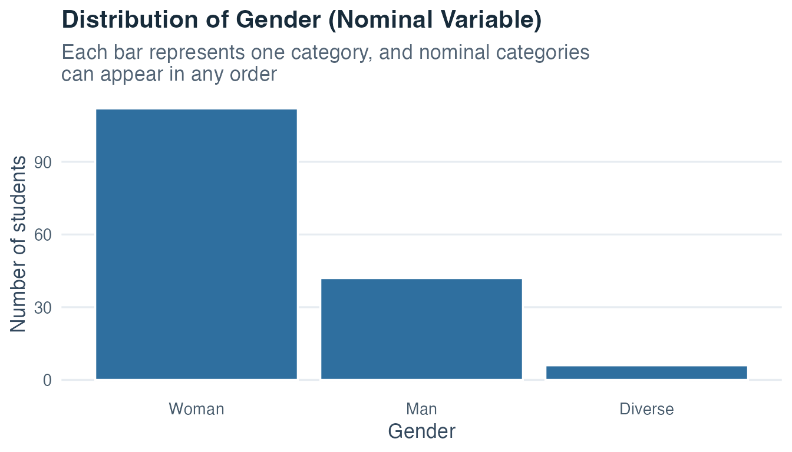
A pie chart is an alternative to the bar chart for nominal variables, particularly useful when you want to emphasize the proportional share of each category relative to the whole. Instead of bar height encoding frequency, the angle of each slice encodes the proportion. The full circle always represents 100% of the sample.
In our dataset, stress group is a nominal variable with two categories: Low stress and High stress. Participants self-reported which group they belonged to before the exam.
First, the same two counts are shown as bars. The labels above the bars make the exact frequencies visible.
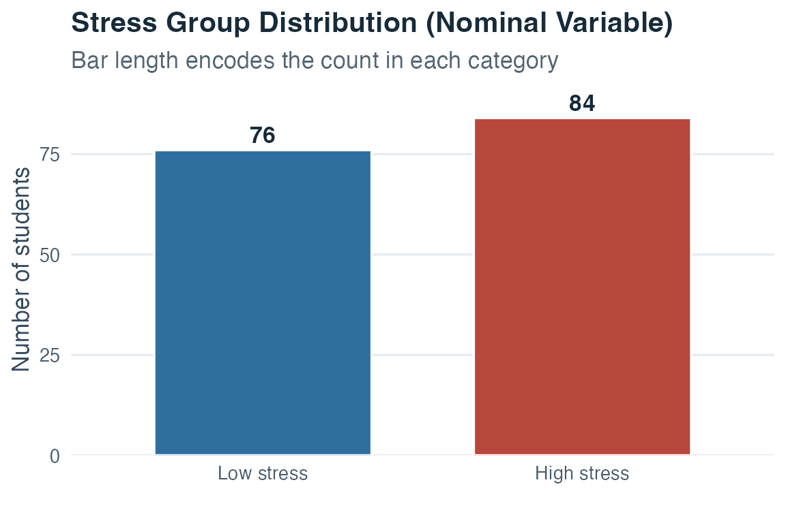
The pie chart below displays those identical counts as shares of one whole. Comparing the two figures shows the tradeoff: bar lengths are easier to compare precisely, while slices emphasize how each category contributes to 100%.
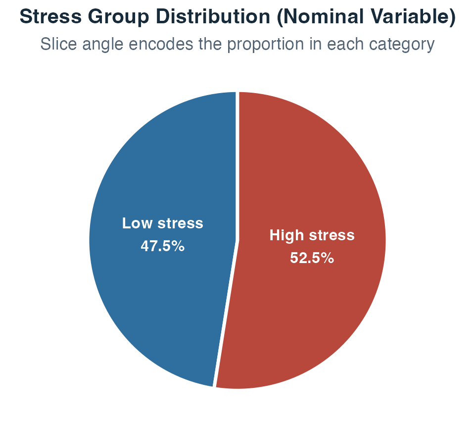
An ordered bar chart is used for ordinal variables: variables where the categories have a meaningful sequence, but the gaps between adjacent categories may not be equal. The critical difference from a nominal bar chart is that the bars must appear in their natural order. Rearranging them would destroy the information that distinguishes ordinal from nominal data.
In our dataset, study satisfaction is measured on a 1–5 scale: 1 means very dissatisfied and 5 means very satisfied. Each higher number represents more satisfaction, but we cannot assume that the increase in satisfaction from a rating of 1 to a rating of 2 is exactly the same magnitude as the increase from a rating of 4 to a rating of 5.
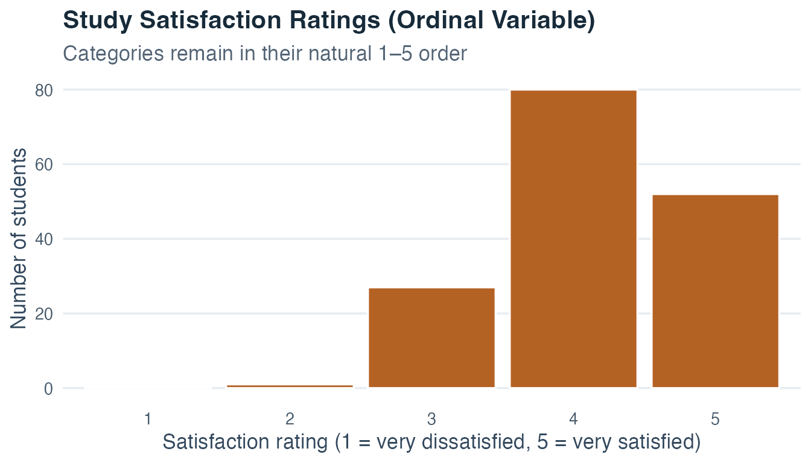
A histogram is the primary tool for displaying metric variables (interval, ratio, or absolute scale). It divides the full range of values into equal-width intervals called bins and draws a bar whose height shows how many observations fall within each bin.
One critical property governs histograms: area must be proportional to frequency. When all bins have the same width (as they do here), height and area are equivalent, so bar height correctly encodes frequency. If bin widths were allowed to differ, height alone would be misleading: a wider bin drawn at the same height as a narrower bin would appear to contain more observations than it does, even if the actual counts are equal.
For a density histogram, the height of bin \(j\) is its relative frequency divided by its width:
\[\text{height}_j = \frac{f_j}{w_j}\]
The area is then \(w_j \times \text{height}_j = f_j\). Bin choice also affects appearance. Too few wide bins can hide important structure. Too many narrow bins can make random variation look like a pattern. Compare several reasonable bin widths and prefer a display that reveals stable features without chasing the most dramatic picture.
In our dataset, exam anxiety is a multi-item score from 0 to 40. A total score of 0 means that no anxiety item was endorsed. It does not establish the complete absence of the underlying construct. For descriptive analysis, we therefore treat the score as approximately interval-level and avoid ratio interpretations.
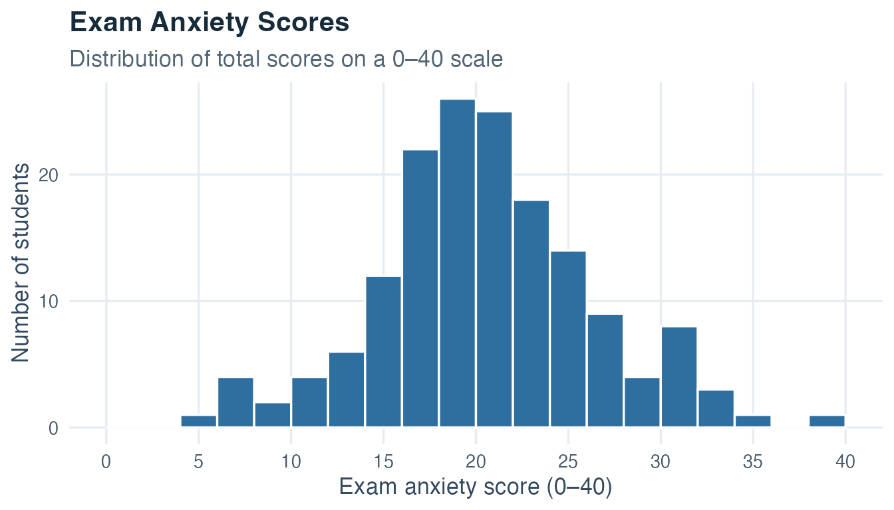
A Tukey boxplot (also called a box-and-whisker plot) provides a compact summary of a metric distribution. The box spans the first quartile (Q1) to the third quartile (Q3), and the line inside marks the median. The whiskers reach the most extreme observed values within 1.5 IQR of the box edges. Observations beyond those fences are plotted individually as potential outliers.
Before comparing groups, it helps to see every part of one boxplot separately. The next figure uses constructed summary values to make the anatomy visible. It is a diagram of the boxplot components rather than a summary calculated from an underlying raw dataset.
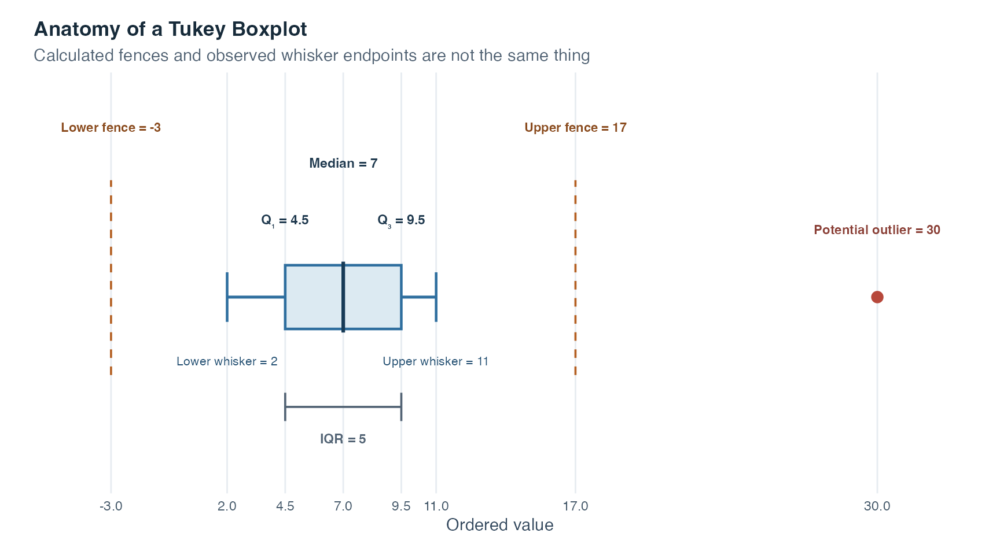
Read the figure from the box outward. Q1 and Q3 enclose the middle half of the ordered values, so the distance between them is the IQR. The median divides that box at the 50th percentile. From each box edge, 1.5 IQR defines an inner fence, a calculated boundary used to identify potentially unusual values. The whiskers do not automatically extend all the way to those fences. They stop at the smallest and largest observations that are still inside them. The separate point beyond the upper fence is therefore displayed as a potential outlier. It deserves investigation, but the graph alone does not prove that it is an error or justify deleting it.
Boxplots are especially powerful for comparing groups side by side, because they pack a large amount of distributional information into a small space.
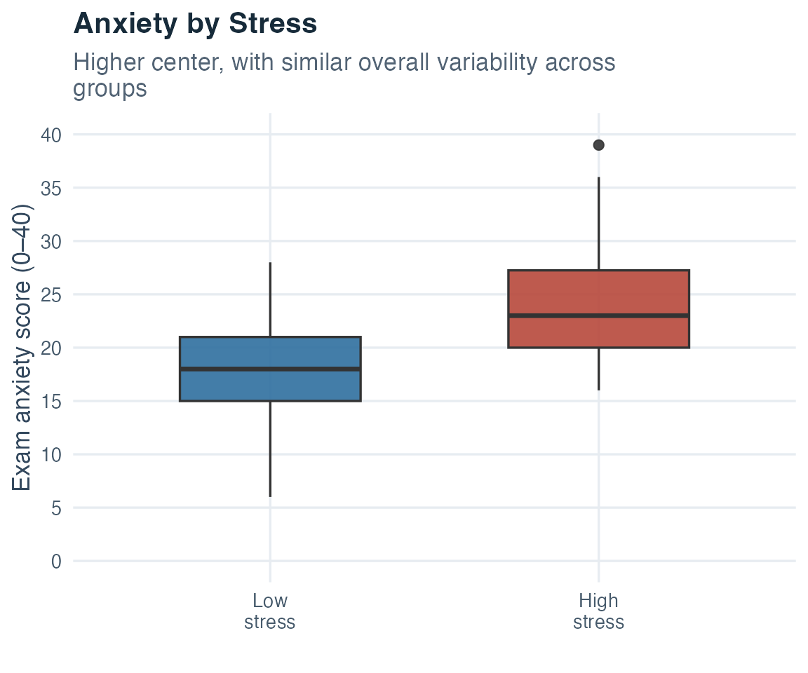
Match every graph to its variable type. Use bar charts or carefully designed pie charts for nominal data, ordered bar charts for ordinal data, and histograms or boxplots for metric data. Inspect the graph before settling on the final numerical summaries, and check that axis scales, bin definitions, and denominators represent the data honestly.
In research, it is often necessary to rescale a variable: converting temperature from Celsius to Fahrenheit, expressing a questionnaire score as a percentage of the maximum, or shifting a scale to remove a constant offset. These operations are called linear transformations.
A linear transformation produces a new variable \(y\) from an original variable \(x\) according to the rule:
\[y_i = a + b \cdot x_i\]
Here, \(a\) is an additive shift and \(b\) is a multiplicative stretch. What makes linear transformations powerful and predictable is that their effects on descriptive statistics follow simple rules:
The mean transforms by the same formula applied to the individual data points:
\[\bar{y} = a + b \cdot \bar{x}\]
The variance is multiplied by \(b^2\). The shift \(a\) has no effect on variability, because shifting all values by the same constant does not change the distances between them:
\[s_y^2 = b^2 \cdot s_x^2\]
The standard deviation is multiplied by the absolute value of \(b\):
\[s_y = |b| \cdot s_x\]
These rules allow you to predict what will happen to your summary statistics whenever you rescale a variable, without recomputing everything from scratch.
Example 1: Celsius to Fahrenheit. The conversion formula is \(F = 32 + 1.8 \cdot C\), giving \(a = 32\) and \(b = 1.8\). Suppose the mean temperature in a dataset is \(20\,^{\circ}\mathrm{C}\) with a standard deviation of \(5\,^{\circ}\mathrm{C}\). After converting to Fahrenheit:
The additive shift of 32 degrees changes the mean but not the variance or standard deviation. The factor of 1.8 scales the standard deviation by 1.8 and the variance by \(1.8^2\). Together, the two operations produce a mean of \(68\,^{\circ}\mathrm{F}\), a variance of \(81\,(^{\circ}\mathrm{F})^2\), and an SD of \(9\,^{\circ}\mathrm{F}\). The mean is not obtained by proportional scaling alone.
Example 2: Rescaling a questionnaire score. If a researcher wants to express a 0–40 anxiety score as a percentage of the maximum (out of 100), the transformation is \(y = 0 + 2.5 \cdot x\), giving \(a = 0\) and \(b = 2.5\). A score of 28 becomes 70%. If the group mean was 20 and the SD was 5, the new mean is \(2.5 \cdot 20 = 50\) and the new SD is \(2.5 \cdot 5 = 12.5\).
Understanding linear transformations prevents confusion whenever variables are rescaled, converted between instruments, or compared across studies.
This general mathematical rule is broader than the admissible transformations that define measurement levels. For an interval scale, \(b\) must be positive to preserve direction. For a ratio scale, \(a\) must also equal zero to preserve the true zero. A negative \(b\) can be useful for deliberate reverse scoring. It reverses ranks and changes the direction of interpretation, so the transformed variable must be labeled and interpreted accordingly.
A linear transformation changes location and scale in predictable ways. When \(b > 0\), it preserves shape orientation and rank. When \(b < 0\), it reflects the distribution and reverses rank. The shift \(a\) moves the mean without affecting variability, while \(|b|\) scales the standard deviation and \(b^2\) scales the variance.
A particularly important special case of the linear transformation is the z-transformation, also called standardization.
For each observation \(x_i\) in a dataset with mean \(\bar{x}\) and standard deviation \(s\), the z-score is:
\[z_i = \frac{x_i - \bar{x}}{s}\]
For a nonconstant sample with a defined, nonzero standard deviation, this is a linear transformation with \(a = -\bar{x}/s\) and \(b = 1/s\). The two consequences follow directly from the general transformation rules:
The z-score for any observation tells you how many standard deviations above or below the mean that observation is located.
Why is this useful? Consider two students assessed with different instruments intended to measure exam anxiety. Student A scores 28 on a 0–40 scale whose relevant reference group has a mean of 20 and an SD of 5. Their z-score is \((28 - 20)/5 = 1.6\). Student B scores 73 on a 0–100 scale whose relevant reference group has a mean of 60 and an SD of 8. Their z-score is \((73 - 60)/8 = 1.625\).
The raw scores use different scales and cannot be compared directly. The z-scores show that both students occupy a similar relative position within their respective reference distributions, roughly 1.6 standard deviations above the mean. This comparison is meaningful only when the instruments address the same construct and the reference groups are relevant. Standardization leaves those substantive requirements in place.
This property is foundational in statistics. Standardized regression coefficients, z-tests, correlation coefficients, and many other concepts all depend on the idea of z-transformation. Mastering it here makes those later techniques considerably more natural.
A z-score does not change where someone stands within the chosen reference distribution. It only expresses that relative position on a scale measured in standard deviations. A z-score of +1.0 means “one standard deviation above the reference mean.” Comparisons across instruments still require a shared construct, comparable measurement quality, and appropriate reference groups.
Standardization changes the measurement scale but preserves the distribution’s pattern. That makes shape the natural next question: what pattern is being preserved?
Center and variability describe two dimensions of a distribution, while shape adds another essential view. Shape tells you how values are arranged across the range, and it affects your choice of summary statistics, your interpretation of group differences, and your understanding of the underlying human or social process. The small teaching datasets below were constructed to make each shape easy to see. They are fictional rather than measurements from real people.
Symmetry, modality, and kurtosis are separate descriptors rather than mutually exclusive categories. Modality describes how many clear peaks or main concentrations a distribution has. Kurtosis describes how readily values occur far into the tails relative to a symmetric bell-shaped reference distribution with the same overall spread. A distribution can be symmetric and bimodal, or right-skewed and unimodal. Describe each dimension that matters instead of assigning one overall shape label.
Symmetric distributions look approximately the same on both sides of the center. Values above and below the mean occur with roughly equal frequency. For a perfectly symmetric distribution, mean and median coincide exactly. The bell-shaped curve familiar from everyday life is the classic example of a symmetric distribution.
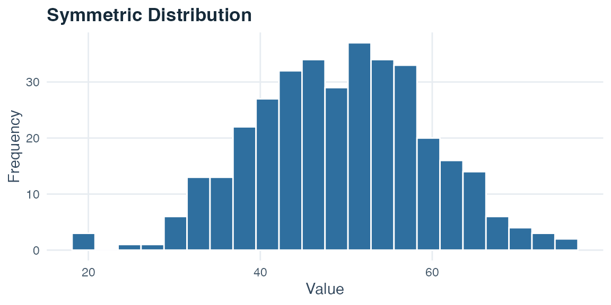
What to notice. The bars rise toward one central peak and then fall away in a similar pattern on both sides. The left and right tails have comparable lengths, so neither side contains a visibly longer trail of values.
Right-skewed distributions (also called positively skewed) have a long tail extending toward high values. Most observations cluster at lower values, while a minority of very high values extends the tail to the right. The mean often exceeds the median because it is sensitive to those high values. This ordering is a tendency and cannot define or prove skewness. Reaction times in cognitive tasks, income, and counts of rare behaviors often show right skew. Most people produce low-to-moderate values, while a few produce values far above the rest.
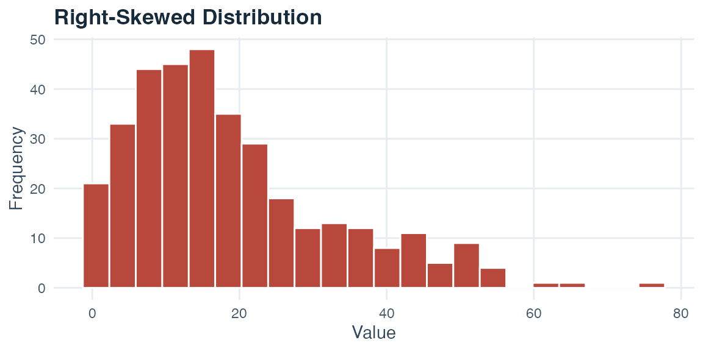
What to notice. The tallest bars are concentrated among the lower values, forming one main peak on the left side of the graph. As values increase, the bars become shorter and continue farther toward the high end. That extended trail of bars is the right tail that gives the distribution its name.
Left-skewed distributions (negatively skewed) mirror this pattern: most values are concentrated at the high end of the scale, and a minority of very low values creates a long tail stretching to the left. The mean often falls below the median, but the graph and broader distribution must confirm the shape. Scores on a very easy test, where most students perform well and only a few struggle, often show left skew.
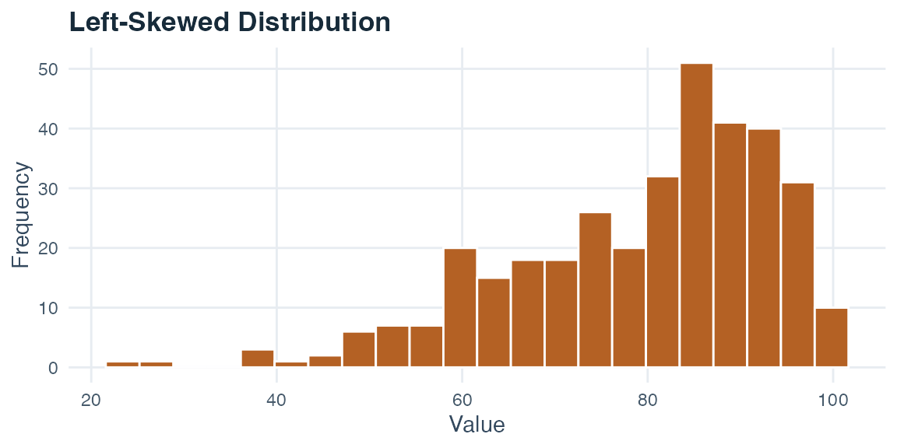
What to notice. Here the tallest bars are concentrated among the higher values, with one main peak on the right side. The bars thin out and continue farther toward the low end. This longer trail on the low-value side is the left tail.
Unimodal distributions have a single peak, meaning that one value range occurs more often than the rest. A single hump makes it easier for a measure of center and a measure of spread to summarize one main concentration of values. A single peak alone cannot establish that a later statistical method is appropriate. Each method has additional conditions that will be introduced when the method is taught.
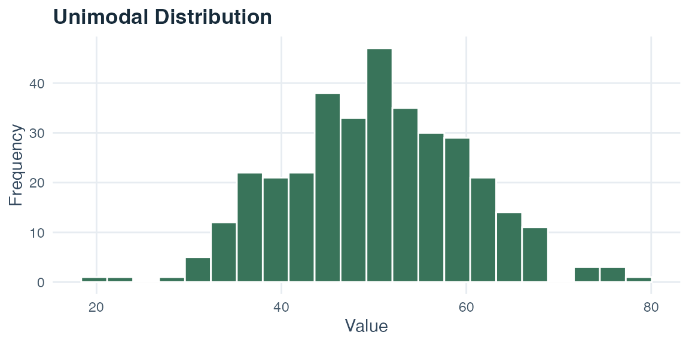
What to notice. The bar heights form one clear peak near the center, and the bars become lower toward both tails. The defining feature is the single peak. A unimodal distribution does not have to be perfectly symmetric.
Bimodal distributions have two distinct peaks. This pattern can suggest a mixture of processes or subpopulations, but the graph alone does not identify their cause. A histogram of exam scores might show peaks at 55 and 85 if students with different preparation patterns are mixed together. Reporting only a single mean (perhaps 70) could then hide both peaks. Investigate the source of the pattern, show the full distribution, and describe subgroups separately only when a substantively defensible grouping variable supports that interpretation.
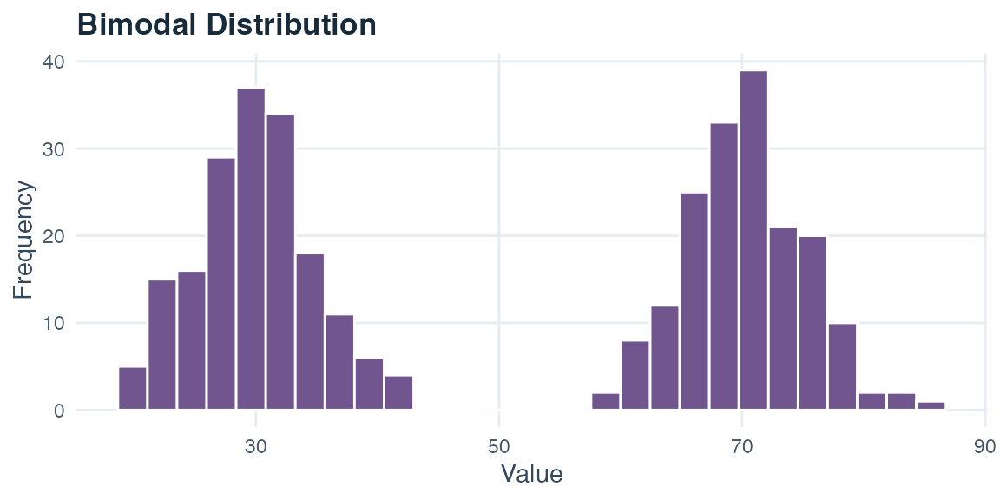
What to notice. Two separate groups of tall bars form two peaks, one near 30 and another near 70. The shorter bars between them create a visible valley, while the outer bars taper into the two tails. A single mean near the valley would not describe either main concentration well.
High-kurtosis distributions contain more extremely distant values than a symmetric, bell-shaped reference distribution with the same overall spread. They are therefore more prone to observations far from the center. A high central peak can occur, as in the constructed example below, but peak height does not define kurtosis.
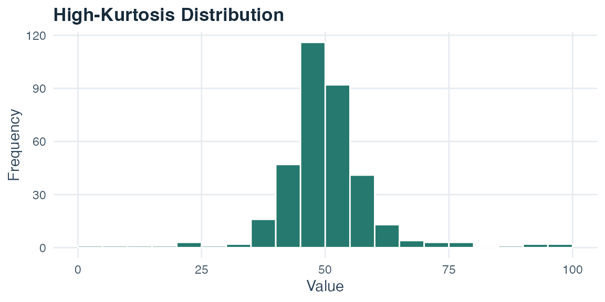
What to notice. A narrow group of very tall bars creates a sharp central peak, but a few observations also reach far into both tails. Those distant tail values, not the height of the central bar by itself, are the important sign of higher kurtosis.
Low-kurtosis distributions contain fewer extremely distant values than a symmetric, bell-shaped reference distribution with the same overall spread. The example below distributes values almost evenly across a fixed interval, so its tails end at clear boundary values. A flat center can occur, but it is not the defining property. Both kurtosis examples use the same sample size, target standard deviation, bin boundaries, and horizontal scale so that tail behavior is not confused with overall spread or plotting choices.
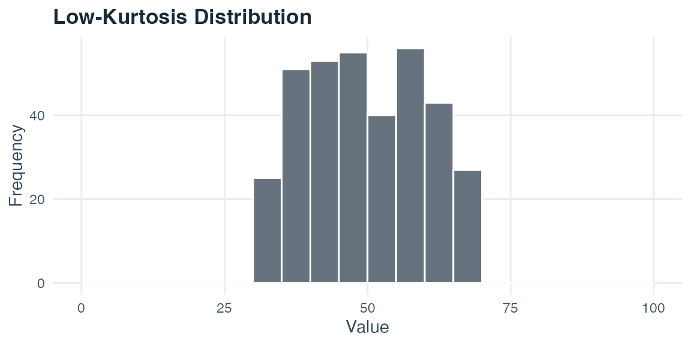
What to notice. The bars are spread more evenly across a bounded middle interval, so there is no sharp central peak. They also stop before reaching the distant tails visible in the high-kurtosis graph. Comparing the two figures directly, both have the same target standard deviation, but the high-kurtosis example combines a dense center with a few far-away values, whereas the low-kurtosis example distributes its values more evenly and contains fewer extreme tail values. This comparison is why peak height alone cannot define kurtosis.
Shape and choice of summary statistics are closely connected. For symmetric, unimodal distributions, the mean and standard deviation often give a useful description. For strongly skewed distributions, the median and IQR are usually more informative because they are not pulled by extreme values. For bimodal distributions, a single center can hide important structure. Show the distribution and investigate possible explanations before deciding whether a subgroup analysis is justified. Visualizing the data before selecting summaries is an essential part of that decision.
Distribution shape helps determine which summaries are informative. Symmetric, unimodal data often support means and standard deviations. Skewed data often call for medians and IQRs. Bimodal data require the peaks to be shown and investigated. Separate subgroup summaries are justified only when the grouping has substantive support. Always visualize the data before choosing a summary because a small table of aggregate values can conceal shape.
Visualizations guide attention before most readers inspect the exact numbers. A misleading graphic does not need to contain a false value. Choices about axes, shapes, categories, denominators, and omitted context can make one feature dominate while another disappears. Learning to pause over those choices is a core skill for critical data literacy.
Use three questions whenever a graph makes a strong impression. What visual feature caught my attention first? Which numerical quantity is that feature supposed to represent? Would a reasonable change in the display alter the story I am seeing? The examples below show why these questions matter.
Truncating the y-axis. When a bar chart’s vertical axis begins above zero, a small absolute difference can occupy nearly the entire plotting area. Bar length is normally read from a baseline, so removing most of that baseline exaggerates the ratio between the bars. A value of 72 is only about 6% larger than 68, yet a chart beginning at 64 can make one bar look several times as long as the visible part of the other.
Compressing or stretching the scale. Changing the spacing or range of an axis alters the apparent slope of a line or the apparent size of a difference. A line rising from 20 to 22 across a y-axis from 0 to 100 looks almost flat. The same line on a y-axis from 19 to 23 looks steep. A tall, narrow plotting area can make the slope feel steeper again, while a short, wide area can flatten it. The numerical change remains two units in every version, so interpret the axis values before reacting to the angle.
The next two charts contain the same fictional mean well-being scores, 68 and 72. Only the displayed vertical range changes.
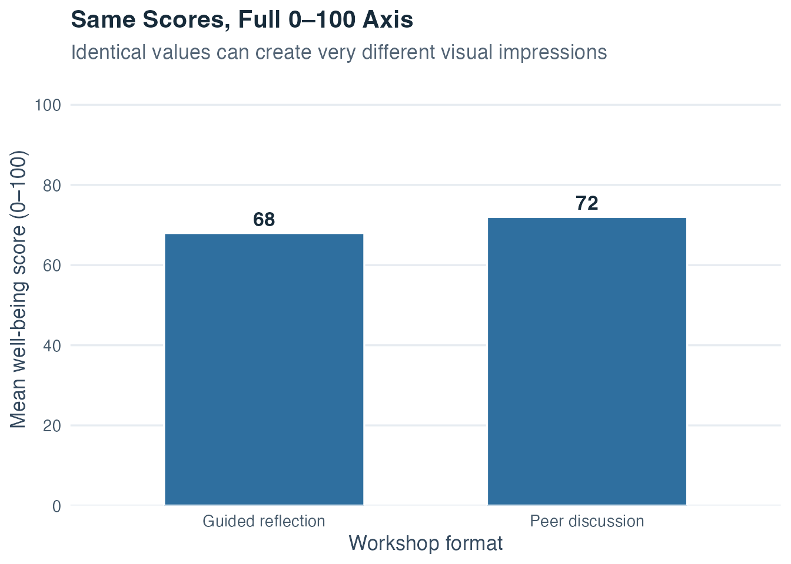
On the full 0–100 scale, the four-point difference looks modest relative to the instrument’s complete range. You can still read both exact values from the labels.
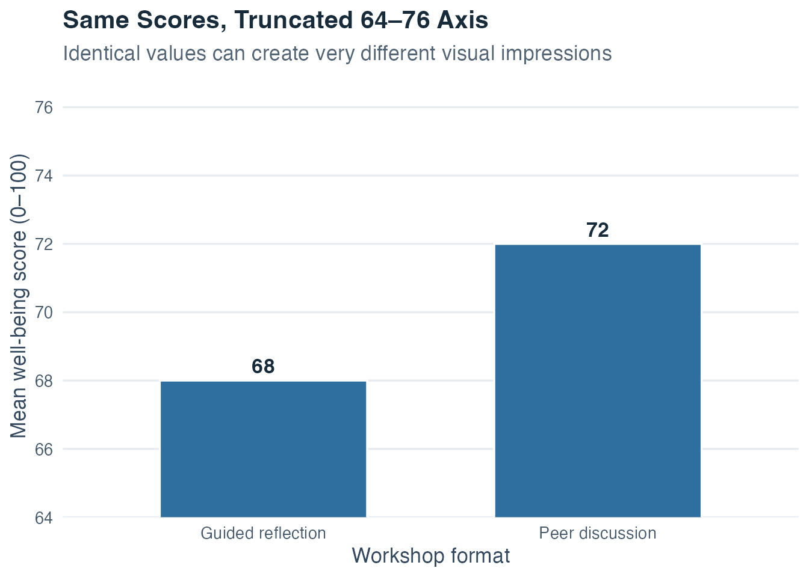
The truncated chart makes the same four-point difference dominate the display. A restricted scale can help readers inspect small changes when it is labeled prominently, but truncating bars is risky because bar length is interpreted from a baseline. A point plot on a prominently labeled narrow scale is often a more honest choice when a narrow range is substantively important.
The problem is therefore the mismatch between the visual cue and the intended comparison. Bars ask the reader to compare lengths, which gives zero a special role. Points ask the reader to compare positions and can work well on a clearly labeled restricted axis. If a narrow range is necessary, state it in the caption, show exact values, and choose a geometry that does not imply misleading length ratios.
Unequal bin widths in histograms. When histogram bins differ in width, the area of each bar (not its height) must encode frequency. A bin twice as wide as the others should be drawn half as tall to represent the same number of observations. If wider bins are drawn at the same height as narrower ones, they visually appear to contain more data than they do. Always check whether histogram bins are equal-width before interpreting heights as frequencies.
Even when all bins have equal width, changing that width can change the apparent detail. These two histograms use the same 160 exam-anxiety observations:
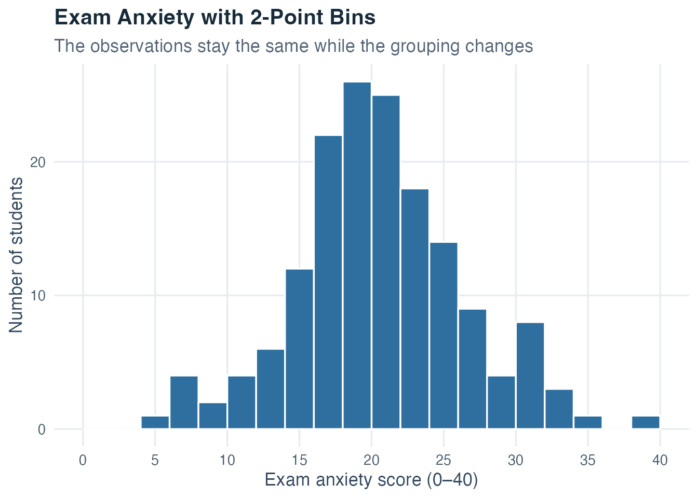
Two-point bins show small local rises and dips. Some of these irregularities reflect finite-sample variation rather than stable features of the distribution.
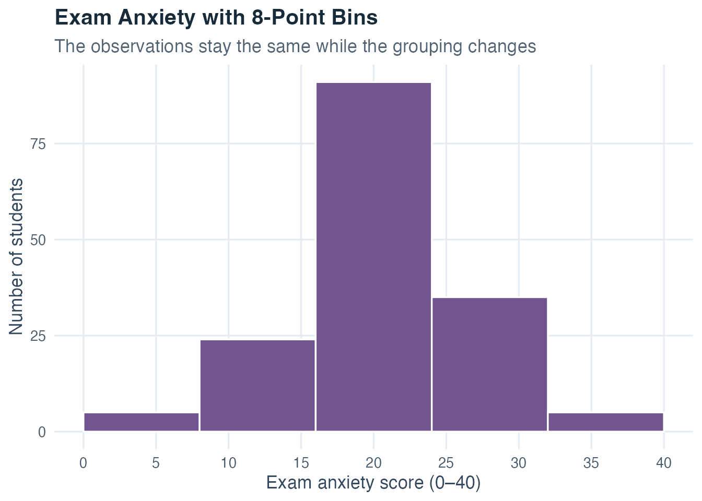
Eight-point bins emphasize the broad concentration near the center and hide some local detail. The sample size, observations, range, mean, and standard deviation are unchanged. Neither display is automatically dishonest. The problem arises when a bin width is selected only because it creates a dramatic peak, erases an inconvenient gap, or suggests multiple groups that disappear under other reasonable choices. Compare more than one defensible binning and report the chosen rule when a visual conclusion depends on it.
Counts and percentages with different denominators. Suppose 24 of 40 learners in Workshop A improve and 30 of 100 learners in Workshop B improve. The raw counts make Workshop B look larger because 30 exceeds 24. The percentages tell another story: 60% improved in A and 30% improved in B. Choosing only counts or only percentages can steer the comparison. Show both the numerator and denominator whenever group sizes differ.
Percentages without their denominator. A claim that “38% improved” leaves important questions unanswered. Was that 19 of 50 people or 1,900 of 5,000? How was improvement defined? How much data were missing? The same percentage can rest on very different amounts of evidence. Selectively reporting one favorable percentage can also conceal outcomes that stayed unchanged or became worse.
Area, volume, and decorative pictures. A symbol that is twice as tall and twice as wide occupies four times the area. If the intended value merely doubled, the picture creates a much larger visual change. Three-dimensional bars introduce a similar problem because perspective and volume compete with the actual height. Use one-dimensional position or length for ordinary comparisons, and keep decorative elements from carrying statistical meaning.
Selective time windows and omitted categories. A trend can look steadily positive when the graph begins immediately after an unusually low year and ends at a temporary high point. A category can appear dominant when a relevant comparison group is removed. Ask why the displayed period begins and ends where it does, whether all substantively relevant categories are present, and whether the same pattern persists under a slightly wider view.
Dual vertical axes. Placing two series with separate y-axes on one graph allows each axis to be scaled independently. Almost any two lines can be made to rise together by choosing convenient ranges. This can suggest a relationship through visual alignment even when the numerical association is weak or the units are unrelated. Separate panels with aligned time axes, direct numerical comparisons, or a scatterplot often make the relationship easier to evaluate honestly.
The following table turns these examples into a reusable reading routine:
| Display choice | Question to ask | Why the choice can mislead | More transparent response |
|---|---|---|---|
| Truncated bar axis | Where does the baseline begin? | Visible bar length can exaggerate a small difference. | Start bars at zero or use clearly labeled points. |
| Stretched or compressed axes | How large is the numerical change? | Aspect ratio changes the apparent steepness. | Read tick values and show exact changes. |
| Histogram bins | Would another reasonable width show the same structure? | Selected bins can invent or conceal peaks and gaps. | Compare defensible widths and state the rule. |
| Count or percentage alone | What are the numerator and denominator? | Unequal group sizes can reverse the visual comparison. | Report count, total, and percentage together. |
| Scaled pictures or 3D shapes | Does area or volume grow faster than the value? | Multiple visual dimensions magnify the apparent change. | Encode the value with position or one-dimensional length. |
| Selected period or categories | What relevant context lies outside the frame? | Omission can create a convenient trend or comparison. | Explain the window and show relevant alternatives. |
| Dual y-axes | Were the two scales chosen independently? | Axis choices can manufacture visual alignment. | Use separate aligned panels or analyze the association directly. |
Before interpreting a display, check its axis labels, scale ranges, bin definitions, denominators, sample size, measurement method, missing data, and accompanying numerical summaries. Numbers and graphics gain meaning from the measurement and presentation choices that produced them. A clear caption should make those choices easier to inspect.
Graphs and percentages can mislead without using false numbers. Check the axis origin and range, histogram bin definitions, denominator, sample size, and measurement method. This habit protects you from being misled and from accidentally misleading others.
These mistakes share a common root: applying or interpreting a statistical summary without checking whether it is justified by the variable, measurement scale, and observed distribution. Check the scale and data quality, inspect the distribution, then select and interpret the summary.
Descriptive statistics matter because evidence reaches us in compressed form. News reports, policy discussions, research articles, institutional reports, and everyday claims often present one average, one percentage, or one striking graph. You can now slow that compression down. You can ask what was measured, which cases entered the dataset, whether the chosen summary fits the scale, how much variation surrounds the center, and what the graph reveals or conceals.
That habit changes the quality of an interpretation. A mean can no longer stand in for every person. A group difference invites a check of each distribution. An unusual value becomes something to investigate in context. A persuasive graphic becomes a set of choices about axes, categories, and denominators that you know how to examine. Descriptive statistics give you a language for seeing the structure of evidence before deciding what it means.
The workflow now has a clear logic. The measurement level tells you which operations make sense. A frequency table shows how often values occur. Measures of center locate a typical value, measures of spread show how strongly values differ, and graphs reveal patterns that a single number can hide. Standardization expresses a value’s location in units of standard deviations. Together, these steps turn raw observations into a defensible account of the sample.
The next topic asks a new question. Here, we described the values that were observed. In Probability, we ask what outcomes could occur and how likely they are under a stated process. The connection is close. The relative frequencies in this topic become probabilities for selection from a fixed set. Distributions gain probabilities as well as shapes, and the mean and variance become properties of probability models. Later, these ideas help explain why the mean from one sample differs from the mean from another sample.
Keep one working habit as you move forward. First identify what each variable means, then inspect its distribution, and only then calculate or model. Probability builds on that clear description by adding a principled account of possible outcomes and their likelihood.
We now bring the ideas together in one simulation. A simulation is a computer-built example that follows rules chosen for teaching. It lets us practice a complete analysis on a coherent dataset, but it is not a measurement of real people and cannot provide a real-world finding.
The computer creates the values with a random-number generator. This is a set of step-by-step computer instructions, also called an algorithm, that produces values with chance-like variation. The program still needs a starting point. That starting number is called a seed. If another person uses the same seed and the same instructions, the generator produces the same values again. The result is reproducible, meaning that every learner can rebuild and check the exact same example. A different seed would create a different but similarly structured teaching dataset.
Imagine, then, a fictional study in which 160 first-year students complete a short questionnaire one week before an important exam. This setting gives us a reason to use the full descriptive workflow: a long table of scores does not yet reveal what is typical, how much the scores vary, or whether two groups occupy different parts of the scale. We will move slowly from the rows of the dataset to frequencies, numerical summaries, graphs, group comparisons, and standardized scores.
Keep three questions in view as the example develops:
What does the distribution of exam-anxiety scores look like in the observed sample? Which measures of center and spread describe it honestly? Do the numerical summaries and graphs tell a consistent story when students who report low and high current stress are compared?
These are descriptive questions. They ask what the artificial sample looks like and do not ask whether stress causes anxiety.
Intended population and observed sample. The intended population is first-year students preparing for comparable examinations. The observed dataset is a simulated sample of 160 students. Because these values were generated rather than collected from that population, they teach the analysis workflow but cannot support a real-world population estimate.
For each student, we record:
idLow stress vs. High stress)Woman, Man, Diverse)| Variable | Role and measurement level | Suitable descriptive treatment |
|---|---|---|
id |
Anonymous nominal identifier | Use only to distinguish rows; do not average it |
group |
Nominal grouping variable | Counts, percentages, bar or pie chart, and group-wise comparisons |
gender |
Nominal background variable | Counts, percentages, and a bar chart |
exam_anxiety |
Multi-item score, formed by combining several questionnaire answers and treated as approximately interval | Mean with standard deviation (SD), median with interquartile range (IQR), histogram, boxplot, and z-scores |
sleep_hours |
Ratio variable | Plausibility range, mean with SD, or median with IQR according to shape |
satisfaction |
Ordinal 1–5 rating | Ordered frequencies, percentages, median, and ordered bar chart |
Read the table one row at a time. The first three variables are labels. Counts and percentages are appropriate for stress group and gender, while the identifier is used only to keep rows distinct. The next two variables record numerical amounts or scores, so center and spread can be useful. Satisfaction is ordered, but the gaps between its five response categories are not guaranteed to be equal, so we preserve the category order and emphasize frequencies and the median. The identifier is deliberately excluded from calculations because its digits only name a row.
How the computer creates the data. We keep one seed fixed throughout the page. The instructions create stress group and gender as categories. Sleep and exam-anxiety values vary from student to student, with the high-stress group given a higher average anxiety and fewer average sleep hours. Satisfaction tends to be lower when anxiety expressed as a z-score is higher; Step 8 explains that standardized scale. Finally, values are kept inside each questionnaire or measurement scale’s possible range. These are ingredients placed into the example on purpose. They are not discoveries about real students.
The selected methods follow the measurement levels and the opening questions. Frequency tables describe nominal and ordinal categories, while the histogram and numerical summaries describe the numerical anxiety score. Group-wise summaries and boxplots compare distributions without treating the group label as a quantity.
Step 1: Exploring the Raw Data
Before computing any statistics, always look at the raw data first. The table below shows the full dataset. You can sort columns, search for specific values, and scroll through all 160 students.
This first inspection helps you check whether the data look plausible. The observed sleep values run from 4.1 to 9.3 hours, exam anxiety scores from 6 to 39, and satisfaction ratings from 2 to 5. The dataset contains 0 missing values. These checks do not prove that every entry is correct, but an impossible value, unexpected code, or missingness pattern, meaning a tendency for values to be absent in particular variables or groups, would need investigation before continuing.
Once the rows and codes look plausible, the next step is to summarize the categorical variables without treating their labels as quantities.
Step 2: Describing Nominal Variables (Stress Group and Gender)
Stress group and gender are nominal variables: they classify students into categories without implying any numerical order. We describe them with counts and percentages.
| Stress group | n | % |
|---|---|---|
| Low stress | 76 | 47.5% |
| High stress | 84 | 52.5% |
| Gender | n | % |
|---|---|---|
| Woman | 112 | 70.0% |
| Man | 42 | 26.2% |
| Diverse | 6 | 3.8% |
Read the stress-group table across each row. The n column gives the number of cases, while the % column divides that count by all 160 cases and expresses the result out of 100. The high-stress group contains 84 students and the low-stress group contains 76. The two counts add to 160 and the displayed percentages add to 100%, apart from any rounding.
The gender table follows the same structure, but its categories answer a different question. It shows 112 cases in the Woman category, 42 in the Man category, and 6 in the Diverse category. Because these are nominal labels, the table has no cumulative column and the row order carries no quantitative meaning. At this stage, both tables describe the artificial sample only; neither is evidence about the composition of a real student population.
Step 3: Describing an Ordinal Variable (Study Satisfaction)
Satisfaction is measured on a 1–5 scale and is ordinal: larger numbers mean higher satisfaction, but the distances between adjacent categories are not assumed to be equal. We describe it with counts and percentages.
| Satisfaction | n | % |
|---|---|---|
| 1 | 0 | 0.0% |
| 2 | 1 | 0.6% |
| 3 | 27 | 16.9% |
| 4 | 80 | 50.0% |
| 5 | 52 | 32.5% |
The table retains all five response categories, including rating 1 with a frequency of zero. A total of 132 students (82.5%) selected 4 or 5. These generated data are concentrated at the satisfied end of the ordinal scale, while the zero count at rating 1 remains visible rather than disappearing from the table.
Counts and percentages suit the categorical variables. Exam anxiety is quantitative, so we now describe both its typical value and its spread.
Step 4: Overall Descriptives for Exam Anxiety
exam_anxiety is a total score formed by adding several questionnaire responses. We treat it as approximately interval-level, which is a common working assumption for a summed scale but not proof that adjacent score differences are psychologically identical. Under that assumption, means and standard deviations are useful summaries; medians and IQRs remain valuable checks.
| n | Mean | Median | SD | IQR | Min | Max |
|---|---|---|---|---|---|---|
| 160 | 21.1 | 21 | 5.9 | 7.2 | 6 | 39 |
The sample mean is 21.1 and the median is 21, so two measures of center give nearly the same value in this dataset. The SD is 5.9, the IQR is 7.2, and the observed scores run from 6 to 39. Close mean and median values are compatible with the approximately symmetric histogram in Step 6, but they do not establish symmetry by themselves.
Step 5: Comparing Anxiety Between Stress Groups
Students rated themselves as low or high stress before the exam. We now ask whether their measured exam anxiety reflects this self-classification. Group-wise descriptive statistics give the first answer.
| Stress group | n | Mean | Median | SD | IQR |
|---|---|---|---|---|---|
| Low stress | 76 | 17.7 | 18 | 4.9 | 6.0 |
| High stress | 84 | 24.2 | 23 | 5.0 | 7.2 |
Both mean and median are higher in the high-stress group, as expected from the simulation design. The group standard deviations are nearly equal, while the high-stress group has a somewhat larger IQR. The main descriptive difference is therefore higher anxiety rather than substantially greater variability.
This descriptive comparison shows a clear difference in location within this dataset. Topic 3 will ask the separate question of whether a sample difference provides evidence about a population difference.
The table compresses each distribution into a few numbers. A histogram is the next check because it reveals the overall shape that those numbers cannot show.
Step 6: Visualizing the Distribution of Exam Anxiety
A histogram gives a direct view of the shape of the full distribution.
The histogram shows how many students fall into each range of anxiety scores. Most students cluster around moderate values. Scores taper off toward both extremes, meaning very low and very high anxiety are both relatively uncommon. The overall shape looks roughly symmetric, and the observed mean of 21.1 and median of 21 are consistent with that visual reading without proving symmetry.
The overall histogram combines both stress groups. To see whether their centers and spreads differ, we now separate the same anxiety scores by group.
Step 7: Visualizing Group Differences with a Boxplot
Boxplots summarize the center, spread, and potential outliers for each group and are highly effective for comparing groups side by side. Their whiskers extend from the box toward the most distant values still covered by the boxplot rule. A point beyond a whisker is a potential outlier: it deserves contextual investigation but is not automatically an error.
Each box represents the central 50% of anxiety scores for one group, spanning from Q1 to Q3. The horizontal line inside the box marks the median. The high-stress group’s box is positioned higher on the vertical axis: the typical high-stress student reports more anxiety.
The height of each box (the IQR) and the length of the whiskers describe variability. The high-stress box is somewhat taller, but the group standard deviations are very similar. Points beyond the whiskers are unusual relative to their group peers and merit attention before drawing conclusions.
Together with the table in Step 5, the boxplot shows that the main group difference concerns location: high-stress students tend to report more anxiety. Their middle 50% is somewhat more spread out, but the nearly equal standard deviations do not support a clear overall difference in variability.
Step 8: Standardizing Anxiety Scores with the Z-Transformation
The exam anxiety scale runs from 0 to 40 and is specific to this questionnaire. To express each student’s position within this sample in standard-deviation units, we apply the z-transformation: for each observation, subtract the overall sample mean and divide by the overall sample standard deviation.
The z-score for student \(i\) is:
\[z_i = \frac{x_i - \bar{x}}{s}\]
The result has been stored as z_exam_anxiety in the dataset.
The table below shows the raw anxiety score and its z-score equivalent for the first twelve students.
| Student ID | Stress group | Anxiety score | z-score |
|---|---|---|---|
| 1 | High stress | 22 | 0.15 |
| 2 | High stress | 25 | 0.66 |
| 3 | Low stress | 18 | -0.53 |
| 4 | High stress | 24 | 0.49 |
| 5 | High stress | 33 | 2.02 |
| 6 | Low stress | 14 | -1.21 |
| 7 | High stress | 30 | 1.51 |
| 8 | Low stress | 18 | -0.53 |
| 9 | High stress | 20 | -0.19 |
| 10 | High stress | 24 | 0.49 |
| 11 | Low stress | 22 | 0.15 |
| 12 | High stress | 22 | 0.15 |
Read each row from the raw score to the standardized score. The sign gives the direction from the sample mean: a positive z-score lies above it and a negative z-score lies below it. The size gives the distance in standard-deviation units. A student with z = 0 scores exactly at the sample mean. A student with z = +1.5 scores 1.5 standard deviations above the sample mean, while a student with z = -1.0 scores one standard deviation below it. The table does not rank students as better or worse; it only expresses where each score sits within this particular artificial sample.
The histogram below uses transformed versions of the original bin boundaries, the edges that decide which values enter each bar. Its bars therefore preserve the original histogram’s shape exactly while the horizontal scale changes. The mean is now 0 and the standard deviation is now 1.
The dashed vertical line marks z = 0, the sample mean. The observed z-scores run from -2.57 to 3.04. Values far from zero merit investigation in context, but distance alone does not prove that a value is wrong or should be deleted.
Taken together, the tables and figures tell one consistent story about this artificial sample: the high-stress group has a higher anxiety center, the two groups have similar overall spread, and standardization changes the units without changing the histogram’s shape. The final step is to separate what this workflow teaches from claims it cannot support.
This example is simulated, so no person was measured and no population claim is available. The data-generating process deliberately creates average differences between stress groups, which means finding those differences later recovers a pattern placed into the simulation rather than discovering new evidence. A real study would need a clear rule for who could be included, evidence that its questionnaires measure the intended characteristics, a careful check of where values are missing, and a design appropriate to its intended claims.
The example followed the same reading order developed in the Theory section. We first identified the cases and variables, matched each variable to its measurement level, and inspected the raw rows before calculating anything. Frequency tables then described the categorical variables, while the mean, median, standard deviation, interquartile range, and five-number summary described different features of the anxiety-score distribution.
The displays made those summaries visible. Frequency tables showed the category counts and percentages, the histogram showed the shape of the quantitative score distribution, and the side-by-side boxplots made group location, middle spread, and unusual values comparable. The z-transformation completed the workflow by changing the anxiety scale into standard-deviation units without changing the distribution’s shape. Together, these steps show why descriptive statistics are not a list of separate formulas: each table, number, and figure answers one part of the opening questions, and their interpretations must agree before we move toward probability or inference.
Choose PDF for printing or Word for editing.
Choose PDF for printing or Word for editing.
Descriptive statistics connect measurement to analysis. Begin by identifying what each case, variable, and value represents, then use the measurement level to choose defensible frequencies, numerical summaries, and graphs. Center, spread, and shape must be interpreted together because none provides a complete description alone. These ideas support probability, inference, correlation, regression, and every later topic in this learning sequence.
| Symbol | Meaning | Question to ask |
|---|---|---|
| \(x_i\) | Value of observation \(i\) | What does one recorded value represent? |
| \(n\) and \(N\) | Sample size and population size | Am I describing a sample or the complete population? |
| \(\bar{x}\) and \(\mu\) | Sample mean and population mean | Is the symbol consistent with the target? |
| \(s^2\) and \(\sigma^2\) | Sample variance and population variance | Does the denominator match the target? |
| \(s\) and \(\sigma\) | Sample SD and population SD | What is the original measurement unit? |
| \(\sum\) | Add the stated expression across its index range | What is the summand, and what are the bounds? |
Before reporting a result, identify the cases and variables, inspect missing or impossible values, determine the measurement level, examine the distribution, select a compatible center and spread, and state what the summaries cannot establish about the population or causality.
Five scale levels determine which operations and summaries are valid. Each level adds properties to the one above it.
| Scale | Defining property | Admissible recoding | Core summaries |
|---|---|---|---|
| Nominal | Categories without order | One-to-one relabeling | Counts, proportions, mode |
| Ordinal | Ordered categories, unequal spacing | Strictly increasing recoding | Counts, proportions, median, percentiles, mode |
| Interval | Equal spacing, assigned zero | \(y=a+bx\), \(b>0\) | Mean, SD, differences, correlation |
| Ratio | Equal spacing, true zero | \(y=bx\), \(b>0\) | Interval summaries plus meaningful ratios |
| Absolute | True zero and fixed natural unit | \(y=x\) | Ratio summaries and counts |
Interval, ratio, and absolute scales are collectively called metric scales.
| Quantity | Formula | Interpretation |
|---|---|---|
| Absolute frequency | \(n_j\) | Number of observations in category \(j\) |
| Relative frequency | \(f_j=n_j/n\) | Proportion in category \(j\) |
| Cumulative relative frequency | \(F_j=\sum_{k=1}^{j}f_k\) | Proportion at or below ordered category \(j\) |
Absolute frequencies sum to \(n\) and relative frequencies sum to 1, apart from rounding. Cumulative frequencies require an ordered variable and are not meaningful for nominal categories.
Three measures describe the typical value:
| Measure | Formula | When to use |
|---|---|---|
| Mean | \(\bar{x} = \frac{1}{n}\sum_{i=1}^{n} x_i\) | Symmetric distributions; metric data |
| Median | Middle value when sorted | Skewed distributions; robust to outliers |
| Mode | Most frequent value or category | Any scale; may be tied or nonunique |
When the mean is noticeably higher than the median, that pattern can suggest right skew, especially when a histogram also shows a long right tail. The ordering of the two statistics alone does not prove the distribution’s shape.
Four measures describe how much individuals differ:
| Measure | Formula | When to use |
|---|---|---|
| Range | \(x_{\max} - x_{\min}\) | Direct overview; sensitive to extremes |
| IQR | \(Q_3 - Q_1\) | Robust spread; paired with median |
| Variance | \(s^2 = \frac{1}{n-1}\sum_{i=1}^{n}(x_i - \bar{x})^2\) | Building block for SD and other statistics |
| SD | \(s = \sqrt{s^2}\) | Scale of deviations around the mean; paired with mean |
The values \(Q_1 - 1.5 \cdot \text{IQR}\) and \(Q_3 + 1.5 \cdot \text{IQR}\) define the lower and upper fences. Whiskers extend to the most extreme observations inside those fences. Values beyond the fences are plotted separately as potential outliers.
A linear transformation \(y_i = a + b \cdot x_i\) has predictable effects on summary statistics:
| Quantity | Transformation rule | Effect |
|---|---|---|
| Mean | \(\bar{y}=a+b\bar{x}\) | Shifted by \(a\) and scaled by \(b\) |
| Variance | \(s_y^2=b^2s_x^2\) | Scaled by \(b^2\); unaffected by \(a\) |
| Standard deviation | \(s_y=|b|s_x\) | Scaled by \(|b|\); unaffected by \(a\) |
| Rank and orientation | Preserved when \(b>0\) | Reversed when \(b<0\) |
The transformed mean follows \(\bar{y} = a + b\bar{x}\). The shift \(a\) moves the mean but does not affect variability, while \(|b|\) scales distances and the standard deviation. A negative \(b\) also reflects the distribution and reverses ranks.
For a nonconstant sample with a defined, nonzero \(s\), the z-transformation \(z_i = (x_i - \bar{x}) / s\) produces a sample mean of 0 and a sample SD of 1.
A z-score tells you how many standard deviations above or below the reference mean an observation lies. Comparing z-scores across instruments requires the same construct, suitable reference groups, and comparable measurement quality.
| Scale level | Appropriate diagram |
|---|---|
| Nominal | Bar chart, pie chart |
| Ordinal | Ordered bar chart |
| Metric (interval, ratio, absolute) | Histogram, boxplot |
In histograms, area is proportional to frequency. With equal bin widths, height and area both encode frequency correctly. With unequal widths, density height is \(f_j/w_j\). Compare sensible bin widths because the apparent shape can change with the grouping.
| Shape | Key feature | Interpretive implication |
|---|---|---|
| Symmetric | Equal tails on both sides | Mean and median are close |
| Right-skewed | Long tail toward high values | Mean often exceeds median; verify visually |
| Left-skewed | Long tail toward low values | Mean often falls below median; verify visually |
| Unimodal | Single peak | One main concentration, summarized according to its shape |
| Bimodal | Two peaks | Show and investigate both peaks; do not assume subgroups |
| High kurtosis | Greater weight on extreme deviations | More prone to distant observations |
| Low kurtosis | Less weight on extreme deviations | Less prone to distant observations |
Symmetry, modality, and kurtosis can coexist in different combinations. Peak height alone does not define kurtosis.
Graphs can create misleading impressions through truncated axes, compressed or stretched scales, and inappropriate histogram bins. Percentages can mislead when their denominator, sample size, measurement method, or missing data are concealed. Both graphics and numbers require context and valid measurement.
You should now be able to identify cases, variables, values, and measurement levels; read the notation used in means, variances, and z-scores; build and interpret frequency summaries; choose compatible measures of center and spread; compare distributions with tables and graphs; predict the effects of linear transformations; standardize observations; and recognize presentation choices that can distort a statistical message. You should also be able to state the limits of a descriptive conclusion without turning an observed pattern into a population or causal claim.